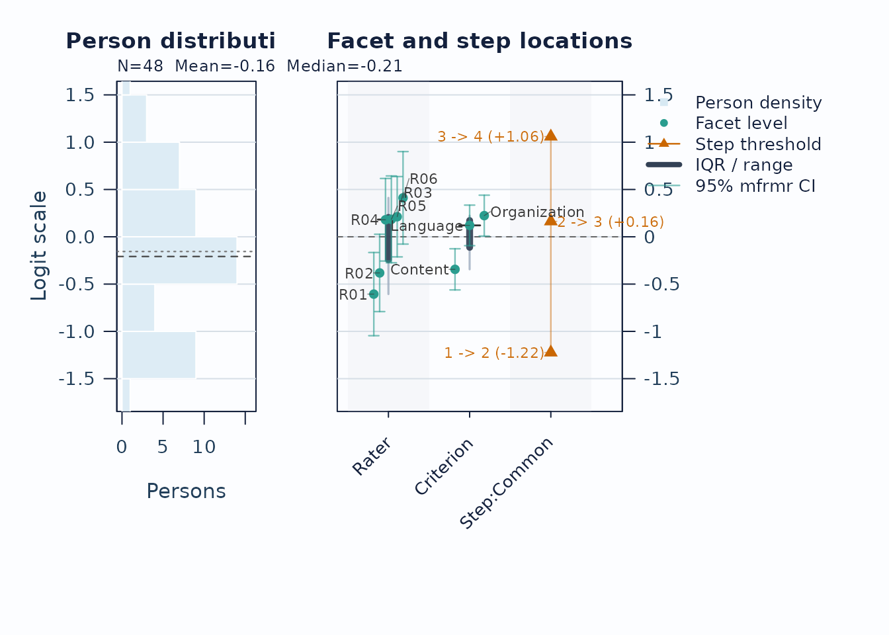
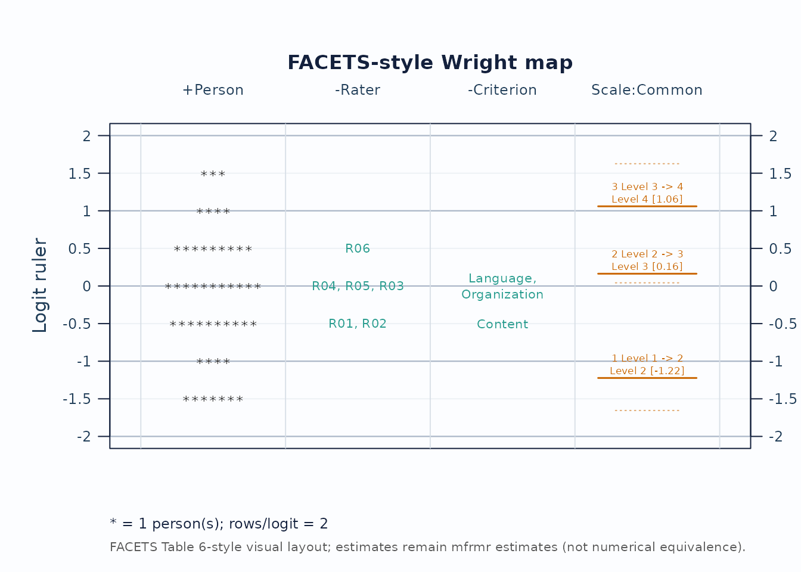
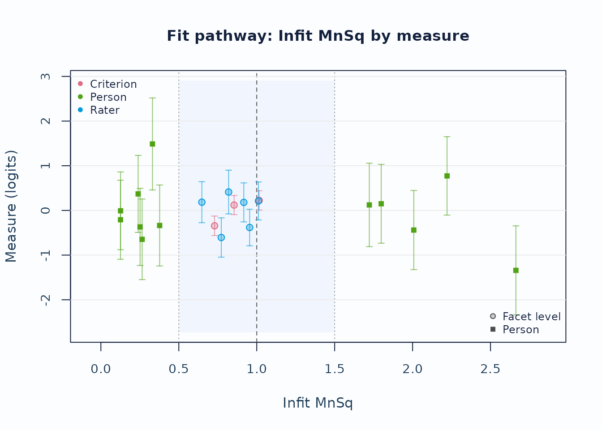
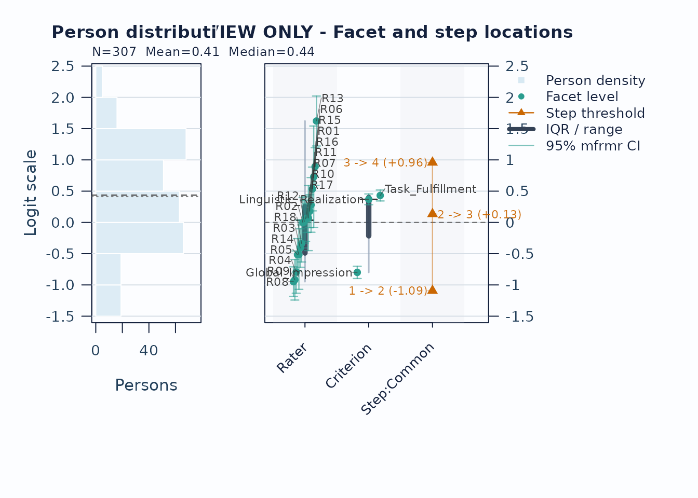
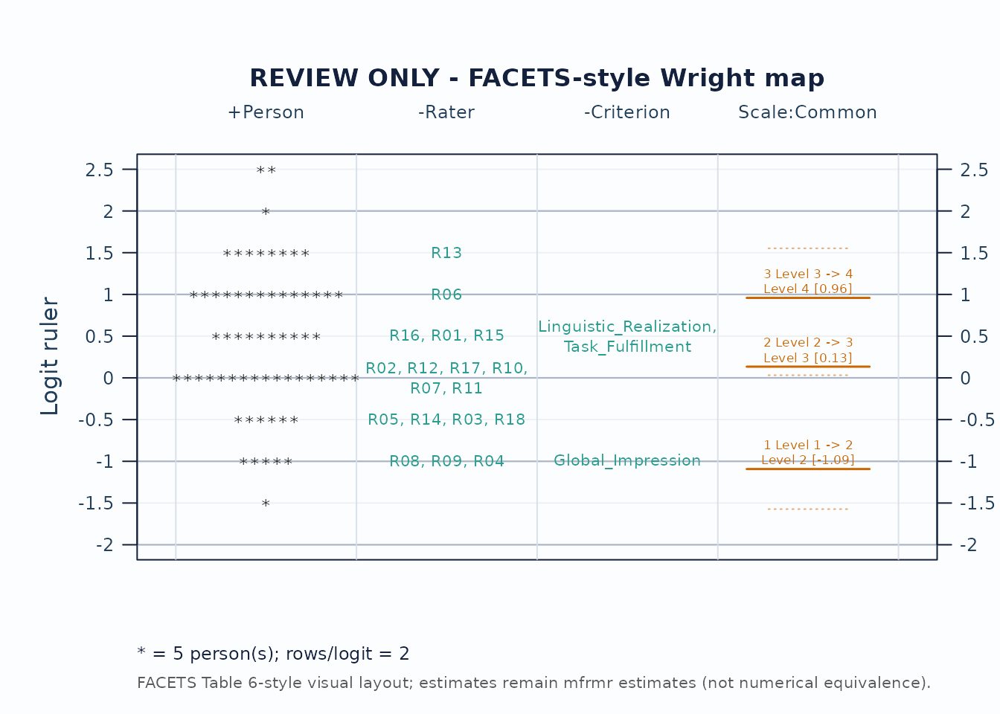
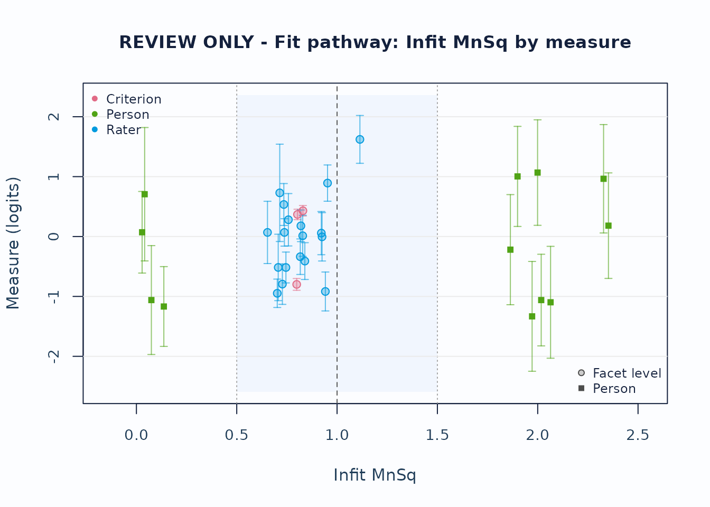

This vignette outlines a reproducible workflow for:
- loading packaged simulation data
- fitting an MFRM with flexible facets
- choosing a fast fit summary or an opt-in comprehensive summary
- producing the required Wright map on the fitted shared logit scale
- running diagnostics and residual PCA
- generating APA and visual summary outputs
- moving from fitted models into design simulation and fixed-calibration prediction
For a plot-first companion guide, see the separate
mfrmr-visual-diagnostics vignette.
For a faster preliminary run without changing the final analysis target:
- test code mechanics on a small deterministic subset or, for an MML
workflow, a temporary
quad_points = 7grid; that grid is screening-only and cannot support automatic IC ranking or LRT. Restore the prespecified final MML grid (31 points by default) and check a denser common grid when a comparison is close or consequential - choose
method = "JML"only when its person-parameter treatment is methodologically appropriate, not merely as a faster substitute for MML - use
diagnose_mfrm(..., residual_pca = "none", diagnostic_mode = "both", fit_df_method = "both")when the diagnostics will feed a comprehensive summary - reuse the same diagnostics object in downstream reports and plots
MML and Diagnostic Modes
mfrmr treats MML and JML
differently on purpose.
-
MMLintegrates over the person distribution with Gauss-Hermite quadrature. -
mml_engine = "direct"(the default) optimizes the quadrature-based marginal log-likelihood directly.mml_engine = "em"and"hybrid"provide the documented EM and EM-warm-start routes for supported RSM/PCM fits. -
JMLis useful for JMLE-oriented comparisons and analyses that avoid a parametric person distribution.MMLis the package default and supports marginal and fixed-calibration follow-up when its response-model and population-distribution assumptions are defensible.
For RSM and PCM, diagnostics now expose two
distinct evidence paths:
-
diagnostic_mode = "legacy"keeps the residual/EAP-based stack. -
diagnostic_mode = "marginal_fit"adds the strict latent-integrated screen. -
diagnostic_mode = "both"is the safest default when you want to inspect both views side by side.
Strict marginal diagnostics are screening-oriented. Use
summary(diag)$diagnostic_basis to separate the legacy
residual evidence from the strict marginal evidence rather than pooling
them into one decision.
Load Data
library(mfrmr)
list_mfrmr_data(details = TRUE)[, c("Key", "PrimaryUse", "Design", "CountBasis")]
#> Key PrimaryUse
#> 1 example_core Idealized fast examples
#> 2 example_bias DFF and bias demonstrations with planted effects
#> 3 example_operational Beginner applied workflow
#> 4 study1 Unequal-workload sparse-design review
#> 5 study2 Larger sparse-design review
#> 6 combined Identity/linking design review; not direct fit
#> 7 study1_itercal Legacy synthetic variant review
#> 8 study2_itercal Legacy synthetic variant review
#> 9 combined_itercal Identity/linking sensitivity review; not direct fit
#> Design
#> 1 Complete crossing; no planned omissions
#> 2 Balanced two-rater assignment; planted non-null effects
#> 3 Connected two-rater assignment; six planned omissions
#> 4 Two raters per person; highly unequal rater workloads
#> 5 Two raters per person; incomplete criterion coverage
#> 6 Overlapping IDs; requires explicit anchors/linking for a common scale
#> 7 Legacy Study 1 variant; rows and scores can differ
#> 8 Legacy Study 2 variant; rows and scores can differ
#> 9 Overlapping IDs; requires explicit anchors/linking for a common scale
#> CountBasis
#> 1 unique labels
#> 2 unique labels
#> 3 unique labels
#> 4 unique labels
#> 5 unique labels
#> 6 raw labels; 513 persons and 30 raters when Study-prefixed
#> 7 unique labels
#> 8 unique labels
#> 9 raw labels; 513 persons and 30 raters when Study-prefixed
data("ej2021_study1", package = "mfrmr")
head(ej2021_study1)
#> Study Person Rater Criterion Score
#> 1 Study1 P001 R08 Global_Impression 4
#> 2 Study1 P001 R08 Linguistic_Realization 3
#> 3 Study1 P001 R08 Task_Fulfillment 3
#> 4 Study1 P001 R10 Global_Impression 4
#> 5 Study1 P001 R10 Linguistic_Realization 3
#> 6 Study1 P001 R10 Task_Fulfillment 2
study1_alt <- load_mfrmr_data("study1")
identical(names(ej2021_study1), names(study1_alt))
#> [1] TRUEApplied Runnable Example
Start with the packaged example_operational dataset. It
is intentionally compact but uses a connected two-rater assignment,
unequal rater workloads, and six planned omissions represented by absent
long-format rows rather than NA or sentinel scores. This
makes the main tutorial closer to an applied rating design without using
empirical records. The same object is also available via
data("mfrmr_example_operational", package = "mfrmr"). A
separate score-free assignment roster lets the pre-fit review identify
those six omissions without guessing which cells should have existed.
example_core remains available as an idealized
complete-crossing example for fast help-page checks.
data("mfrmr_example_operational", package = "mfrmr")
data("mfrmr_example_operational_design", package = "mfrmr")
toy <- mfrmr_example_operational
data_review_toy <- describe_mfrm_data(
data = toy,
person = "Person",
facets = c("Rater", "Criterion"),
score = "Score",
rating_min = 1,
rating_max = 4,
expected_design = mfrmr_example_operational_design
)
data_summary_toy <- summary(data_review_toy)
data_summary_toy$structural_missingness
#> Status ExpectedCells ObservedCells MatchedCells MissingExpectedCells
#> 1 declared 288 282 282 6
#> UnexpectedObservedCells CoverageRate ExpectedOnlyPersons UnexpectedPersons
#> 1 0 0.9791667 0 0
data_summary_toy$design_connectivity
#> Basis Facet PersonNodes FacetLevelNodes Edges Components
#> 1 observed Rater 48 6 96 1
#> 2 observed Criterion 48 3 144 1
#> 3 declared_expected Rater 48 6 96 1
#> 4 declared_expected Criterion 48 3 144 1
#> LargestComponentPersons LargestComponentLevels LargestComponentPercent
#> 1 48 6 100
#> 2 48 3 100
#> 3 48 6 100
#> 4 48 3 100
#> Connected
#> 1 TRUE
#> 2 TRUE
#> 3 TRUE
#> 4 TRUE
fit_toy <- fit_mfrm(
data = toy,
person = "Person",
facets = c("Rater", "Criterion"),
score = "Score",
method = "MML",
model = "RSM"
)
diag_toy <- diagnose_mfrm(
fit_toy,
residual_pca = "none",
diagnostic_mode = "both",
fit_df_method = "both"
)
# Fast fit-only summary: this does not compute diagnostics.
fit_summary_toy <- summary(fit_toy, profile = "fit", detail = "brief")
# Comprehensive review, reusing diagnostics already computed above.
facets_summary_toy <- summary(
fit_toy,
profile = "facets",
detail = "brief",
diagnostics = diag_toy
)
res_toy <- facets_summary_toy$results
fit_summary_toy$decision
#> Interpretation FormalInference
#> 1 Fit gates passed; formal precision review required No
#> FitReadiness Why
#> 1 ready Formal precision support has not been evaluated.
#> NextAction
#> 1 Run `diagnose_mfrm()` and pass its result as `diagnostics =` to evaluate formal precision support; fit readiness alone is not a formal-inference decision.
fit_summary_toy$overview
#> # A tibble: 1 × 87
#> Model Method MethodUsed ICContractVersion N ResponseRows
#> <chr> <chr> <chr> <chr> <dbl> <int>
#> 1 RSM MML MML mfrmr_ic_person_v2 282 282
#> # ℹ 81 more variables: WeightedResponseTotal <dbl>, Persons <int>, Npar <int>,
#> # Facets <int>, FacetInteractions <int>, InteractionParameters <int>,
#> # InteractionCells <int>, InteractionSparseCells <int>, Categories <dbl>,
#> # LogLik <dbl>, Deviance <dbl>, WeightPolicy <chr>, ICEligible <lgl>,
#> # ICSelectable <lgl>, ICStatus <chr>, ICSampleSize <dbl>,
#> # ICSampleSizeBasis <chr>, AIC <dbl>, BIC <dbl>, SABIC <dbl>,
#> # SABICSelectable <lgl>, AICFormula <chr>, BICFormula <chr>, …
fit_summary_toy$readiness
#> Domain Status
#> 1 Fit ready
#> 2 Numerical pass
#> 3 Data pass
#> 4 Design pass_linked
#> 5 Stability pass
#> 6 Diagnostics not_assessed
#> 7 Reporting ready_for_diagnostics_and_reporting_follow_up
#> Detail
#> 1 All stored fit-readiness components passed.
#> 2 Optimizer returned convergence code 0.
#> 3 No preparation warning or review row was retained.
#> 4 The observed graph satisfies the connectivity requirement; review the remaining design and identification assumptions separately.
#> 5 No boundary-constant non-person facet level was detected.
#> 6 Diagnostics have not yet been incorporated into this fit-only status.
#> 7 Reporting status is the strictest applicable upstream workflow state.
fit_summary_toy$data_review
#> $status
#> Domain Status
#> 1 Data pass
#> 2 Design pass_linked
#> 3 Stability pass
#> 4 Reporting ready_for_diagnostics
#>
#> $overall_connectivity
#> $overall_connectivity$summary
#> Subset Criterion Person Rater Observations
#> 1 1 3 48 6 282
#>
#> $overall_connectivity$nodes
#> Node Component Subset Facet Level
#> 1 Person:P001 Person:P048 1 Person P001
#> 2 Person:P002 Person:P048 1 Person P002
#> 3 Person:P003 Person:P048 1 Person P003
#> 4 Person:P004 Person:P048 1 Person P004
#> 5 Person:P005 Person:P048 1 Person P005
#> 6 Person:P006 Person:P048 1 Person P006
#> 7 Person:P007 Person:P048 1 Person P007
#> 8 Person:P008 Person:P048 1 Person P008
#> 9 Person:P009 Person:P048 1 Person P009
#> 10 Person:P010 Person:P048 1 Person P010
#> 11 Person:P011 Person:P048 1 Person P011
#> 12 Person:P012 Person:P048 1 Person P012
#> 13 Person:P013 Person:P048 1 Person P013
#> 14 Person:P014 Person:P048 1 Person P014
#> 15 Person:P015 Person:P048 1 Person P015
#> 16 Person:P016 Person:P048 1 Person P016
#> 17 Person:P017 Person:P048 1 Person P017
#> 18 Person:P018 Person:P048 1 Person P018
#> 19 Person:P019 Person:P048 1 Person P019
#> 20 Person:P020 Person:P048 1 Person P020
#> 21 Person:P021 Person:P048 1 Person P021
#> 22 Person:P022 Person:P048 1 Person P022
#> 23 Person:P023 Person:P048 1 Person P023
#> 24 Person:P024 Person:P048 1 Person P024
#> 25 Person:P025 Person:P048 1 Person P025
#> 26 Person:P026 Person:P048 1 Person P026
#> 27 Person:P027 Person:P048 1 Person P027
#> 28 Person:P028 Person:P048 1 Person P028
#> 29 Person:P029 Person:P048 1 Person P029
#> 30 Person:P030 Person:P048 1 Person P030
#> 31 Person:P031 Person:P048 1 Person P031
#> 32 Person:P032 Person:P048 1 Person P032
#> 33 Person:P033 Person:P048 1 Person P033
#> 34 Person:P034 Person:P048 1 Person P034
#> 35 Person:P035 Person:P048 1 Person P035
#> 36 Person:P036 Person:P048 1 Person P036
#> 37 Person:P037 Person:P048 1 Person P037
#> 38 Person:P038 Person:P048 1 Person P038
#> 39 Person:P039 Person:P048 1 Person P039
#> 40 Person:P040 Person:P048 1 Person P040
#> 41 Person:P041 Person:P048 1 Person P041
#> 42 Person:P042 Person:P048 1 Person P042
#> 43 Person:P043 Person:P048 1 Person P043
#> 44 Person:P044 Person:P048 1 Person P044
#> 45 Person:P045 Person:P048 1 Person P045
#> 46 Person:P046 Person:P048 1 Person P046
#> 47 Person:P047 Person:P048 1 Person P047
#> 48 Person:P048 Person:P048 1 Person P048
#> 49 Rater:R01 Person:P048 1 Rater R01
#> 50 Rater:R02 Person:P048 1 Rater R02
#> 51 Rater:R03 Person:P048 1 Rater R03
#> 52 Rater:R04 Person:P048 1 Rater R04
#> 53 Rater:R05 Person:P048 1 Rater R05
#> 54 Rater:R06 Person:P048 1 Rater R06
#> 55 Criterion:Language Person:P048 1 Criterion Language
#> 56 Criterion:Organization Person:P048 1 Criterion Organization
#> 57 Criterion:Content Person:P048 1 Criterion Content
#>
#> $overall_connectivity$components
#> [1] 1
#>
#> $overall_connectivity$connected
#> [1] TRUE
#>
#> $overall_connectivity$anchors_present
#> [1] FALSE
#>
#>
#> $facet_support
#> Facet ConstantScore BoundaryConstant Level Observations WeightedN
#> 1 Rater FALSE FALSE R01 47 47
#> 2 Rater FALSE FALSE R02 56 56
#> 3 Rater FALSE FALSE R03 50 50
#> 4 Rater FALSE FALSE R04 47 47
#> 5 Rater FALSE FALSE R05 44 44
#> 6 Rater FALSE FALSE R06 38 38
#> 7 Criterion FALSE FALSE Content 94 94
#> 8 Criterion FALSE FALSE Language 94 94
#> 9 Criterion FALSE FALSE Organization 94 94
#> DistinctScores MinScore MaxScore
#> 1 4 1 4
#> 2 4 1 4
#> 3 4 1 4
#> 4 4 1 4
#> 5 4 1 4
#> 6 4 1 4
#> 7 4 1 4
#> 8 4 1 4
#> 9 4 1 4
#>
#> $boundary_levels
#> [1] Facet ConstantScore BoundaryConstant Level
#> [5] Observations WeightedN DistinctScores MinScore
#> [9] MaxScore
#> <0 rows> (or 0-length row.names)
#>
#> $single_level_facets
#> character(0)
#>
#> $preparation_notes
#> [1] Stage Condition Severity Count
#> [5] Affected Message RecommendedAction
#> <0 rows> (or 0-length row.names)
#>
#> $estimability
#> $estimability$contract_version
#> [1] "mfrmr-readiness-0.2.3-v3"
#>
#> $estimability$method
#> [1] "MML"
#>
#> $estimability$model
#> [1] "RSM"
#>
#> $estimability$readiness
#> ReadinessContractVersion ReadinessScope EstimabilityState ReasonCodes
#> 1 mfrmr-readiness-0.2.3-v3 fit identified
#> Complete AuditedFreeDimension OptimizerFreeDimension Rank Nullity
#> 1 TRUE 9 9 9 0
#> PopulationAssumptionLinked
#> 1 FALSE
#>
#> $estimability$complete
#> [1] TRUE
#>
#> $estimability$nonlinear_blocks
#> character(0)
#>
#> $estimability$design
#> $estimability$design$role
#> [1] "adjacent_category_logit_constrained_free_coordinate_design"
#>
#> $estimability$design$observation_rows
#> [1] 282
#>
#> $estimability$design$transition_rows
#> [1] 846
#>
#> $estimability$design$transitions
#> [1] 3
#>
#> $estimability$design$free_dimension
#> [1] 9
#>
#> $estimability$design$nonzero_entries
#> [1] 3558
#>
#> $estimability$design$rank
#> [1] 9
#>
#> $estimability$design$nullity
#> [1] 0
#>
#> $estimability$design$state
#> [1] "identified"
#>
#> $estimability$design$tolerance_sensitive
#> [1] FALSE
#>
#> $estimability$design$tolerance_ranks
#> Tolerance Rank Nullity
#> 1 1e-12 9 0
#> 2 1e-10 9 0
#> 3 1e-08 9 0
#>
#> $estimability$design$column_norm_min
#> [1] 15.68439
#>
#> $estimability$design$column_norm_max
#> [1] 23.74868
#>
#> $estimability$design$smallest_singular_value
#> [1] 0.7060421
#>
#> $estimability$design$condition_index
#> [1] 2.350635
#>
#>
#> $estimability$parameter_blocks
#> Block FreeCoordinates
#> 1 Criterion 2
#> 2 Rater 5
#> 3 steps 2
#>
#> $estimability$parameter_map
#> Block Coordinate Facet Level
#> 1 Rater Rater:R01 Rater R01
#> 2 Rater Rater:R02 Rater R02
#> 3 Rater Rater:R03 Rater R03
#> 4 Rater Rater:R04 Rater R04
#> 5 Rater Rater:R05 Rater R05
#> 6 Criterion Criterion:Content Criterion Content
#> 7 Criterion Criterion:Language Criterion Language
#> 8 steps steps:shared:transition1 shared_rating_scale shared
#> 9 steps steps:shared:transition2 shared_rating_scale shared
#> ReferenceLevel Constraint OptimizerIndex
#> 1 R06 sum_zero 1
#> 2 R06 sum_zero 2
#> 3 R06 sum_zero 3
#> 4 R06 sum_zero 4
#> 5 R06 sum_zero 5
#> 6 Organization sum_zero 6
#> 7 Organization sum_zero 7
#> 8 transition3 within_ladder_sum_zero 8
#> 9 transition3 within_ladder_sum_zero 9
#>
#> $estimability$zero_coordinates
#> character(0)
#>
#> $estimability$null_directions
#> data frame with 0 columns and 0 rows
#>
#> $estimability$null_blocks
#> [1] Block Appearances
#> <0 rows> (or 0-length row.names)
#>
#> $estimability$observed_components
#> [1] 1
#>
#> $estimability$counterfactual_jml
#> $estimability$counterfactual_jml$Role
#> [1] "same fixed-effect structure with free JML Person coordinates"
#>
#> $estimability$counterfactual_jml$Rank
#> [1] 57
#>
#> $estimability$counterfactual_jml$Nullity
#> [1] 0
#>
#> $estimability$counterfactual_jml$State
#> [1] "identified"
#>
#> $estimability$counterfactual_jml$FreeDimension
#> [1] 57
#>
#> $estimability$counterfactual_jml$ToleranceRanks
#> Tolerance Rank Nullity
#> 1 1e-12 57 0
#> 2 1e-10 57 0
#> 3 1e-08 57 0
#>
#>
#> $estimability$population_assumption_linked
#> [1] FALSE
#>
#> $estimability$nonlinear_transformation
#> $estimability$nonlinear_transformation$status
#> [1] "not_required"
#>
#> $estimability$nonlinear_transformation$attempted
#> [1] FALSE
#>
#> $estimability$nonlinear_transformation$nonlinear_blocks
#> character(0)
#>
#> $estimability$nonlinear_transformation$parameterization_only
#> [1] TRUE
#>
#> $estimability$nonlinear_transformation$likelihood_jacobian_evaluated
#> [1] FALSE
#>
#> $estimability$nonlinear_transformation$structural_identification_classified
#> [1] FALSE
#>
#> $estimability$nonlinear_transformation$readiness_effect
#> [1] "none_parameterization_audit_only"
#>
#>
#> $estimability$gpcm_response_kernel
#> $estimability$gpcm_response_kernel$role
#> [1] "retained_gpcm_adjacent_category_logit_response_kernel_jacobian"
#>
#> $estimability$gpcm_response_kernel$status
#> [1] "not_applicable_model"
#>
#> $estimability$gpcm_response_kernel$attempted
#> [1] FALSE
#>
#> $estimability$gpcm_response_kernel$conditional_response_kernel_jacobian_evaluated
#> [1] FALSE
#>
#> $estimability$gpcm_response_kernel$marginal_person_pattern_jacobian_evaluated
#> [1] FALSE
#>
#> $estimability$gpcm_response_kernel$structural_identification_classified
#> [1] FALSE
#>
#> $estimability$gpcm_response_kernel$readiness_effect
#> [1] "none_pending_property_and_marginal_model_audits"
#>
#>
#> $estimability$mml_observed_pattern_score
#> $estimability$mml_observed_pattern_score$role
#> [1] "observed_person_log_marginal_pattern_score_jacobian"
#>
#> $estimability$mml_observed_pattern_score$status
#> [1] "not_required_linear_preflight_scope"
#>
#> $estimability$mml_observed_pattern_score$attempted
#> [1] FALSE
#>
#> $estimability$mml_observed_pattern_score$observed_patterns_only
#> [1] TRUE
#>
#> $estimability$mml_observed_pattern_score$all_possible_response_patterns_evaluated
#> [1] FALSE
#>
#> $estimability$mml_observed_pattern_score$structural_identification_classified
#> [1] FALSE
#>
#> $estimability$mml_observed_pattern_score$weak_information_classified
#> [1] FALSE
#>
#> $estimability$mml_observed_pattern_score$readiness_effect
#> [1] "none_observed_patterns_diagnostic_only"
#>
#>
#> $estimability$mml_all_pattern_information
#> $estimability$mml_all_pattern_information$role
#> [1] "all_response_patterns_expected_marginal_score_information"
#>
#> $estimability$mml_all_pattern_information$status
#> [1] "not_required_linear_preflight_scope"
#>
#> $estimability$mml_all_pattern_information$attempted
#> [1] FALSE
#>
#> $estimability$mml_all_pattern_information$observed_patterns_only
#> [1] FALSE
#>
#> $estimability$mml_all_pattern_information$all_possible_response_patterns_evaluated
#> [1] FALSE
#>
#> $estimability$mml_all_pattern_information$expected_information_evaluated
#> [1] FALSE
#>
#> $estimability$mml_all_pattern_information$retained_observation_designs
#> [1] TRUE
#>
#> $estimability$mml_all_pattern_information$missing_rows_imputed
#> [1] FALSE
#>
#> $estimability$mml_all_pattern_information$structural_identification_classified
#> [1] FALSE
#>
#> $estimability$mml_all_pattern_information$weak_information_classified
#> [1] FALSE
#>
#> $estimability$mml_all_pattern_information$readiness_effect
#> [1] "none_all_patterns_local_diagnostic_only"
#>
#>
#> $estimability$nonlinear_local_estimability
#> $estimability$nonlinear_local_estimability$contract_version
#> [1] "mfrmr-nonlinear-local-estimability-0.2.3-v1"
#>
#> $estimability$nonlinear_local_estimability$method
#> [1] "MML"
#>
#> $estimability$nonlinear_local_estimability$model
#> [1] "RSM"
#>
#> $estimability$nonlinear_local_estimability$nonlinear_blocks
#> character(0)
#>
#> $estimability$nonlinear_local_estimability$state
#> [1] "not_required"
#>
#> $estimability$nonlinear_local_estimability$evidence_basis
#> [1] "linear_preflight_complete"
#>
#> $estimability$nonlinear_local_estimability$probability_model_scope
#> [1] "implemented_fixed_quadrature_marginal_model"
#>
#> $estimability$nonlinear_local_estimability$local_rank
#> [1] NA
#>
#> $estimability$nonlinear_local_estimability$local_nullity
#> [1] NA
#>
#> $estimability$nonlinear_local_estimability$free_dimension
#> [1] NA
#>
#> $estimability$nonlinear_local_estimability$tolerance_sensitive
#> [1] NA
#>
#> $estimability$nonlinear_local_estimability$parameter_map_complete
#> [1] FALSE
#>
#> $estimability$nonlinear_local_estimability$local_first_order_classified
#> [1] FALSE
#>
#> $estimability$nonlinear_local_estimability$local_full_rank_sufficient
#> [1] FALSE
#>
#> $estimability$nonlinear_local_estimability$local_first_order_rank_deficient
#> [1] FALSE
#>
#> $estimability$nonlinear_local_estimability$local_nonidentifiability_established
#> [1] FALSE
#>
#> $estimability$nonlinear_local_estimability$global_identification_classified
#> [1] FALSE
#>
#> $estimability$nonlinear_local_estimability$continuous_integral_identification_classified
#> [1] FALSE
#>
#> $estimability$nonlinear_local_estimability$weak_information_classified
#> [1] FALSE
#>
#> $estimability$nonlinear_local_estimability$boundary_classified
#> [1] FALSE
#>
#> $estimability$nonlinear_local_estimability$numerical_derivative_status
#> [1] "not_evaluated"
#>
#> $estimability$nonlinear_local_estimability$quadrature_points
#> [1] NA
#>
#> $estimability$nonlinear_local_estimability$reason_codes
#> [1] "nonlinear_coordinates_not_present"
#>
#> $estimability$nonlinear_local_estimability$readiness_effect
#> [1] "none_local_property_only"
#>
#> $estimability$nonlinear_local_estimability$detail
#> [1] "No nonlinear local first-order classification was required for this fit."
#>
#>
#> $estimability$fitted_information
#> $estimability$fitted_information$status
#> [1] "pending_weak_information_calibration"
#>
#> $estimability$fitted_information$attempted
#> [1] FALSE
#>
#> $estimability$fitted_information$nonlinear_blocks
#> character(0)
#>
#> $estimability$fitted_information$weak_information_classified
#> [1] FALSE
#>
#> $estimability$fitted_information$readiness_effect
#> [1] "none_pending_pilot_calibrated_rule"
#>
#>
#>
#> $category_support
#> $category_support$contract_version
#> [1] "mfrmr-readiness-0.2.3-v3"
#>
#> $category_support$model
#> [1] "RSM"
#>
#> $category_support$method
#> [1] "MML"
#>
#> $category_support$scale_scope
#> [1] "single_observed_scale"
#>
#> $category_support$step_facet
#> [1] NA
#>
#> $category_support$rating_range_source
#> [1] "observed"
#>
#> $category_support$score_map
#> OriginalScore InternalScore
#> 1 1 1
#> 2 2 2
#> 3 3 3
#> 4 4 4
#>
#> $category_support$declared_categories
#> [1] 1 2 3 4
#>
#> $category_support$observed_global
#> [1] 1 2 3 4
#>
#> $category_support$retained_categories
#> [1] 1 2 3 4
#>
#> $category_support$readiness
#> ReadinessContractVersion ReadinessScope CategoryState ReasonCodes Complete
#> 1 mfrmr-readiness-0.2.3-v3 fit adequate TRUE
#> StepScopes UnsupportedStepCoordinates UnsupportedCategoryContrasts
#> 1 1 0 0
#> WeakStepScopes WeakLocalScopes
#> 1 0 0
#>
#> $category_support$support_table
#> ScaleScope StepScope DeclaredCategories ObservedGlobal
#> 1 single_observed_scale shared_rating_scale 1;2;3;4 1;2;3;4
#> ObservedWithinScope RetainedForFit FreeStepCount FixedStepCount
#> 1 1;2;3;4 1;2;3;4 2 0
#> DerivedStepCount UnsupportedFreeStepCount UnsupportedCategory UnsupportedStep
#> 1 1 0
#> ZeroType MinimumObservedCategoryCount MaximumCategoryFraction
#> 1 46 0.3404255
#> MaximumWeightedCategoryFraction NormalizedCategoryEntropy
#> 1 0.3404255 0.9746307
#> WeightedNormalizedCategoryEntropy InformationState ReasonCode
#> 1 0.9746307 adequate
#>
#> $category_support$category_table
#> ScaleScope StepScope Category BoundaryCategory
#> 1 single_observed_scale shared_rating_scale 1 TRUE
#> 2 single_observed_scale shared_rating_scale 2 FALSE
#> 3 single_observed_scale shared_rating_scale 3 FALSE
#> 4 single_observed_scale shared_rating_scale 4 TRUE
#> GlobalCount GlobalWeightedN WithinScopeCount WithinScopeWeightedN
#> 1 62 62 62 62
#> 2 96 96 96 96
#> 3 78 78 78 78
#> 4 46 46 46 46
#> ObservedGlobalRaw ObservedWithinScopeRaw ObservedGlobal ObservedWithinScope
#> 1 TRUE TRUE TRUE TRUE
#> 2 TRUE TRUE TRUE TRUE
#> 3 TRUE TRUE TRUE TRUE
#> 4 TRUE TRUE TRUE TRUE
#> RetainedForFit ZeroType SingletonObserved
#> 1 TRUE none FALSE
#> 2 TRUE none FALSE
#> 3 TRUE none FALSE
#> 4 TRUE none FALSE
#>
#> $category_support$step_status
#> ReadinessScope ScaleScope StepScope ParameterClass
#> 1 parameter single_observed_scale shared_rating_scale step
#> 2 parameter single_observed_scale shared_rating_scale step
#> 3 parameter single_observed_scale shared_rating_scale step
#> Coordinate Step Transition LowerCategory UpperCategory
#> 1 shared_rating_scale:Step1 Step1 1 1 2
#> 2 shared_rating_scale:Step2 Step2 2 2 3
#> 3 shared_rating_scale:Step3 Step3 3 3 4
#> RetainedForFit Fixed ConstraintRole OptimizerIndex LowerCount
#> 1 TRUE FALSE free_coordinate_component 8 62
#> 2 TRUE FALSE free_coordinate_component 9 158
#> 3 TRUE FALSE sum_zero_reference_component NA 236
#> UpperCount LowerWeightedN UpperWeightedN CrossingSupport
#> 1 220 62 220 TRUE
#> 2 124 158 124 TRUE
#> 3 46 236 46 TRUE
#> FreeCoordinateAffected ParameterStatus ReasonCodes
#> 1 FALSE estimable
#> 2 FALSE estimable
#> 3 FALSE estimable
#>
#> $category_support$unsupported_contrasts
#> [1] ReadinessScope ScaleScope StepScope ParameterClass
#> [5] Category Direction PlusStep MinusStep
#> [9] FreeCoordinates ParameterStatus ReasonCodes
#> <0 rows> (or 0-length row.names)
#>
#> $category_support$local_support
#> ScaleScope Facet Level Observations ObservedCategories
#> 1 single_observed_scale Rater R01 47 1;2;3;4
#> 2 single_observed_scale Rater R02 56 1;2;3;4
#> 3 single_observed_scale Rater R03 50 1;2;3;4
#> 4 single_observed_scale Rater R04 47 1;2;3;4
#> 5 single_observed_scale Rater R05 44 1;2;3;4
#> 6 single_observed_scale Rater R06 38 1;2;3;4
#> 7 single_observed_scale Criterion Content 94 1;2;3;4
#> 8 single_observed_scale Criterion Language 94 1;2;3;4
#> 9 single_observed_scale Criterion Organization 94 1;2;3;4
#> MissingCategories ObservedPositiveWeightCategories BoundaryCategoryMissing
#> 1 1;2;3;4 FALSE
#> 2 1;2;3;4 FALSE
#> 3 1;2;3;4 FALSE
#> 4 1;2;3;4 FALSE
#> 5 1;2;3;4 FALSE
#> 6 1;2;3;4 FALSE
#> 7 1;2;3;4 FALSE
#> 8 1;2;3;4 FALSE
#> 9 1;2;3;4 FALSE
#> MinimumObservedCategoryCount MinimumPositiveWeightedN MaximumCategoryFraction
#> 1 4 4 0.3829787
#> 2 6 6 0.3928571
#> 3 9 9 0.3200000
#> 4 5 5 0.3404255
#> 5 4 4 0.3181818
#> 6 4 4 0.4473684
#> 7 11 11 0.3617021
#> 8 15 15 0.3085106
#> 9 15 15 0.3617021
#> MaximumWeightedCategoryFraction NormalizedCategoryEntropy
#> 1 0.3829787 0.9218118
#> 2 0.3928571 0.9364779
#> 3 0.3200000 0.9830677
#> 4 0.3404255 0.9482289
#> 5 0.3181818 0.9397794
#> 6 0.4473684 0.8855946
#> 7 0.3617021 0.9289301
#> 8 0.3085106 0.9811369
#> 9 0.3617021 0.9661287
#> WeightedNormalizedCategoryEntropy InformationState ReasonCode
#> 1 0.9218118 adequate
#> 2 0.9364779 adequate
#> 3 0.9830677 adequate
#> 4 0.9482289 adequate
#> 5 0.9397794 adequate
#> 6 0.8855946 adequate
#> 7 0.9289301 adequate
#> 8 0.9811369 adequate
#> 9 0.9661287 adequate
#>
#> $category_support$unsupported_step_coordinates
#> character(0)
#>
#> $category_support$complete
#> [1] TRUE
#>
#> $category_support$exact_support_rule
#> [1] "A free step contrast is unsupported when an internal category has zero positive-weight observations within its fitted ladder scope; the recession direction increases the step below that category and decreases the step above it while leaving other category exponents unchanged."
#>
#> $category_support$weak_information_rule
#> [1] "Empty boundary categories, categories absent only in a non-step local facet scope, singleton observed cells, and singleton transition sides are review evidence only; concentration thresholds remain pending pilot calibration."
#>
#>
#> $boundary
#> $boundary$contract_version
#> [1] "mfrmr-readiness-0.2.3-v3"
#>
#> $boundary$method
#> [1] "MML"
#>
#> $boundary$model
#> [1] "RSM"
#>
#> $boundary$scope
#> [1] "Person"
#>
#> $boundary$complete
#> [1] TRUE
#>
#> $boundary$readiness
#> ReadinessContractVersion ReadinessScope BoundaryState ReasonCodes Complete
#> 1 mfrmr-readiness-0.2.3-v3 fit finite TRUE
#> AuditedParameterClass UnboundedLowN UnboundedHighN FixedExtremeN
#> 1 Person 0 0 0
#> PriorRegularizedExtremeN ConstraintCoupledExtremeN
#> 1 0 0
#>
#> $boundary$parameter_status
#> ReadinessContractVersion ReadinessScope ParameterId ParameterClass
#> 1 mfrmr-readiness-0.2.3-v3 parameter Person:P001:EAP Person
#> 2 mfrmr-readiness-0.2.3-v3 parameter Person:P002:EAP Person
#> 3 mfrmr-readiness-0.2.3-v3 parameter Person:P003:EAP Person
#> 4 mfrmr-readiness-0.2.3-v3 parameter Person:P004:EAP Person
#> 5 mfrmr-readiness-0.2.3-v3 parameter Person:P005:EAP Person
#> 6 mfrmr-readiness-0.2.3-v3 parameter Person:P006:EAP Person
#> 7 mfrmr-readiness-0.2.3-v3 parameter Person:P007:EAP Person
#> 8 mfrmr-readiness-0.2.3-v3 parameter Person:P008:EAP Person
#> 9 mfrmr-readiness-0.2.3-v3 parameter Person:P009:EAP Person
#> 10 mfrmr-readiness-0.2.3-v3 parameter Person:P010:EAP Person
#> 11 mfrmr-readiness-0.2.3-v3 parameter Person:P011:EAP Person
#> 12 mfrmr-readiness-0.2.3-v3 parameter Person:P012:EAP Person
#> 13 mfrmr-readiness-0.2.3-v3 parameter Person:P013:EAP Person
#> 14 mfrmr-readiness-0.2.3-v3 parameter Person:P014:EAP Person
#> 15 mfrmr-readiness-0.2.3-v3 parameter Person:P015:EAP Person
#> 16 mfrmr-readiness-0.2.3-v3 parameter Person:P016:EAP Person
#> 17 mfrmr-readiness-0.2.3-v3 parameter Person:P017:EAP Person
#> 18 mfrmr-readiness-0.2.3-v3 parameter Person:P018:EAP Person
#> 19 mfrmr-readiness-0.2.3-v3 parameter Person:P019:EAP Person
#> 20 mfrmr-readiness-0.2.3-v3 parameter Person:P020:EAP Person
#> 21 mfrmr-readiness-0.2.3-v3 parameter Person:P021:EAP Person
#> 22 mfrmr-readiness-0.2.3-v3 parameter Person:P022:EAP Person
#> 23 mfrmr-readiness-0.2.3-v3 parameter Person:P023:EAP Person
#> 24 mfrmr-readiness-0.2.3-v3 parameter Person:P024:EAP Person
#> 25 mfrmr-readiness-0.2.3-v3 parameter Person:P025:EAP Person
#> 26 mfrmr-readiness-0.2.3-v3 parameter Person:P026:EAP Person
#> 27 mfrmr-readiness-0.2.3-v3 parameter Person:P027:EAP Person
#> 28 mfrmr-readiness-0.2.3-v3 parameter Person:P028:EAP Person
#> 29 mfrmr-readiness-0.2.3-v3 parameter Person:P029:EAP Person
#> 30 mfrmr-readiness-0.2.3-v3 parameter Person:P030:EAP Person
#> 31 mfrmr-readiness-0.2.3-v3 parameter Person:P031:EAP Person
#> 32 mfrmr-readiness-0.2.3-v3 parameter Person:P032:EAP Person
#> 33 mfrmr-readiness-0.2.3-v3 parameter Person:P033:EAP Person
#> 34 mfrmr-readiness-0.2.3-v3 parameter Person:P034:EAP Person
#> 35 mfrmr-readiness-0.2.3-v3 parameter Person:P035:EAP Person
#> 36 mfrmr-readiness-0.2.3-v3 parameter Person:P036:EAP Person
#> 37 mfrmr-readiness-0.2.3-v3 parameter Person:P037:EAP Person
#> 38 mfrmr-readiness-0.2.3-v3 parameter Person:P038:EAP Person
#> 39 mfrmr-readiness-0.2.3-v3 parameter Person:P039:EAP Person
#> 40 mfrmr-readiness-0.2.3-v3 parameter Person:P040:EAP Person
#> 41 mfrmr-readiness-0.2.3-v3 parameter Person:P041:EAP Person
#> 42 mfrmr-readiness-0.2.3-v3 parameter Person:P042:EAP Person
#> 43 mfrmr-readiness-0.2.3-v3 parameter Person:P043:EAP Person
#> 44 mfrmr-readiness-0.2.3-v3 parameter Person:P044:EAP Person
#> 45 mfrmr-readiness-0.2.3-v3 parameter Person:P045:EAP Person
#> 46 mfrmr-readiness-0.2.3-v3 parameter Person:P046:EAP Person
#> 47 mfrmr-readiness-0.2.3-v3 parameter Person:P047:EAP Person
#> 48 mfrmr-readiness-0.2.3-v3 parameter Person:P048:EAP Person
#> Facet Level PrimaryEstimate OptimizerEstimate DisplayEstimate
#> 1 Person P001 0.284295875 NA 0.284295875
#> 2 Person P002 0.661180036 NA 0.661180036
#> 3 Person P003 0.021777727 NA 0.021777727
#> 4 Person P004 0.224107846 NA 0.224107846
#> 5 Person P005 -0.174960652 NA -0.174960652
#> 6 Person P006 0.676810034 NA 0.676810034
#> 7 Person P007 -0.963039373 NA -0.963039373
#> 8 Person P008 -0.369228192 NA -0.369228192
#> 9 Person P009 -0.563507085 NA -0.563507085
#> 10 Person P010 -0.174960652 NA -0.174960652
#> 11 Person P011 -0.218630795 NA -0.218630795
#> 12 Person P012 -0.439367429 NA -0.439367429
#> 13 Person P013 0.766044458 NA 0.766044458
#> 14 Person P014 -1.341859510 NA -1.341859510
#> 15 Person P015 1.487872643 NA 1.487872643
#> 16 Person P016 -1.341859510 NA -1.341859510
#> 17 Person P017 -0.646956804 NA -0.646956804
#> 18 Person P018 -0.439367429 NA -0.439367429
#> 19 Person P019 0.556111633 NA 0.556111633
#> 20 Person P020 -0.208437027 NA -0.208437027
#> 21 Person P021 0.380868909 NA 0.380868909
#> 22 Person P022 -0.008356172 NA -0.008356172
#> 23 Person P023 -1.118804631 NA -1.118804631
#> 24 Person P024 0.122958029 NA 0.122958029
#> 25 Person P025 0.772733413 NA 0.772733413
#> 26 Person P026 -0.208437027 NA -0.208437027
#> 27 Person P027 0.977228902 NA 0.977228902
#> 28 Person P028 -0.209239501 NA -0.209239501
#> 29 Person P029 -1.406187688 NA -1.406187688
#> 30 Person P030 1.181343488 NA 1.181343488
#> 31 Person P031 0.369651193 NA 0.369651193
#> 32 Person P032 -1.717525607 NA -1.717525607
#> 33 Person P033 -1.406187688 NA -1.406187688
#> 34 Person P034 0.563881515 NA 0.563881515
#> 35 Person P035 0.369651193 NA 0.369651193
#> 36 Person P036 1.273451208 NA 1.273451208
#> 37 Person P037 -1.326931162 NA -1.326931162
#> 38 Person P038 0.269099425 NA 0.269099425
#> 39 Person P039 -0.362602895 NA -0.362602895
#> 40 Person P040 -1.326931162 NA -1.326931162
#> 41 Person P041 -1.046074508 NA -1.046074508
#> 42 Person P042 -0.337165623 NA -0.337165623
#> 43 Person P043 -0.461941796 NA -0.461941796
#> 44 Person P044 -0.674136017 NA -0.674136017
#> 45 Person P045 1.514611537 NA 1.514611537
#> 46 Person P046 -0.461941796 NA -0.461941796
#> 47 Person P047 -1.129183696 NA -1.129183696
#> 48 Person P048 0.149302429 NA 0.149302429
#> DisplayAdjustment ParameterStatus BoundaryDirection ResponseExtreme
#> 1 none estimable none none
#> 2 none estimable none none
#> 3 none estimable none none
#> 4 none estimable none none
#> 5 none estimable none none
#> 6 none estimable none none
#> 7 none estimable none none
#> 8 none estimable none none
#> 9 none estimable none none
#> 10 none estimable none none
#> 11 none estimable none none
#> 12 none estimable none none
#> 13 none estimable none none
#> 14 none estimable none none
#> 15 none estimable none none
#> 16 none estimable none none
#> 17 none estimable none none
#> 18 none estimable none none
#> 19 none estimable none none
#> 20 none estimable none none
#> 21 none estimable none none
#> 22 none estimable none none
#> 23 none estimable none none
#> 24 none estimable none none
#> 25 none estimable none none
#> 26 none estimable none none
#> 27 none estimable none none
#> 28 none estimable none none
#> 29 none estimable none none
#> 30 none estimable none none
#> 31 none estimable none none
#> 32 none estimable none none
#> 33 none estimable none none
#> 34 none estimable none none
#> 35 none estimable none none
#> 36 none estimable none none
#> 37 none estimable none none
#> 38 none estimable none none
#> 39 none estimable none none
#> 40 none estimable none none
#> 41 none estimable none none
#> 42 none estimable none none
#> 43 none estimable none none
#> 44 none estimable none none
#> 45 none estimable none none
#> 46 none estimable none none
#> 47 none estimable none none
#> 48 none estimable none none
#> ResponseRows WeightedResponseTotal PrimaryEstimateBasis OptimizerEstimateUse
#> 1 5 5 posterior_eap not_applicable
#> 2 6 6 posterior_eap not_applicable
#> 3 6 6 posterior_eap not_applicable
#> 4 6 6 posterior_eap not_applicable
#> 5 6 6 posterior_eap not_applicable
#> 6 5 5 posterior_eap not_applicable
#> 7 6 6 posterior_eap not_applicable
#> 8 6 6 posterior_eap not_applicable
#> 9 6 6 posterior_eap not_applicable
#> 10 6 6 posterior_eap not_applicable
#> 11 5 5 posterior_eap not_applicable
#> 12 6 6 posterior_eap not_applicable
#> 13 6 6 posterior_eap not_applicable
#> 14 6 6 posterior_eap not_applicable
#> 15 6 6 posterior_eap not_applicable
#> 16 6 6 posterior_eap not_applicable
#> 17 6 6 posterior_eap not_applicable
#> 18 6 6 posterior_eap not_applicable
#> 19 6 6 posterior_eap not_applicable
#> 20 6 6 posterior_eap not_applicable
#> 21 6 6 posterior_eap not_applicable
#> 22 6 6 posterior_eap not_applicable
#> 23 6 6 posterior_eap not_applicable
#> 24 5 5 posterior_eap not_applicable
#> 25 6 6 posterior_eap not_applicable
#> 26 6 6 posterior_eap not_applicable
#> 27 6 6 posterior_eap not_applicable
#> 28 5 5 posterior_eap not_applicable
#> 29 6 6 posterior_eap not_applicable
#> 30 6 6 posterior_eap not_applicable
#> 31 6 6 posterior_eap not_applicable
#> 32 6 6 posterior_eap not_applicable
#> 33 6 6 posterior_eap not_applicable
#> 34 6 6 posterior_eap not_applicable
#> 35 6 6 posterior_eap not_applicable
#> 36 6 6 posterior_eap not_applicable
#> 37 6 6 posterior_eap not_applicable
#> 38 6 6 posterior_eap not_applicable
#> 39 5 5 posterior_eap not_applicable
#> 40 6 6 posterior_eap not_applicable
#> 41 6 6 posterior_eap not_applicable
#> 42 6 6 posterior_eap not_applicable
#> 43 6 6 posterior_eap not_applicable
#> 44 6 6 posterior_eap not_applicable
#> 45 6 6 posterior_eap not_applicable
#> 46 6 6 posterior_eap not_applicable
#> 47 6 6 posterior_eap not_applicable
#> 48 6 6 posterior_eap not_applicable
#> ReasonCodes AuditProvenance
#> 1 person_sufficient_score_and_constraint_jacobian_v1
#> 2 person_sufficient_score_and_constraint_jacobian_v1
#> 3 person_sufficient_score_and_constraint_jacobian_v1
#> 4 person_sufficient_score_and_constraint_jacobian_v1
#> 5 person_sufficient_score_and_constraint_jacobian_v1
#> 6 person_sufficient_score_and_constraint_jacobian_v1
#> 7 person_sufficient_score_and_constraint_jacobian_v1
#> 8 person_sufficient_score_and_constraint_jacobian_v1
#> 9 person_sufficient_score_and_constraint_jacobian_v1
#> 10 person_sufficient_score_and_constraint_jacobian_v1
#> 11 person_sufficient_score_and_constraint_jacobian_v1
#> 12 person_sufficient_score_and_constraint_jacobian_v1
#> 13 person_sufficient_score_and_constraint_jacobian_v1
#> 14 person_sufficient_score_and_constraint_jacobian_v1
#> 15 person_sufficient_score_and_constraint_jacobian_v1
#> 16 person_sufficient_score_and_constraint_jacobian_v1
#> 17 person_sufficient_score_and_constraint_jacobian_v1
#> 18 person_sufficient_score_and_constraint_jacobian_v1
#> 19 person_sufficient_score_and_constraint_jacobian_v1
#> 20 person_sufficient_score_and_constraint_jacobian_v1
#> 21 person_sufficient_score_and_constraint_jacobian_v1
#> 22 person_sufficient_score_and_constraint_jacobian_v1
#> 23 person_sufficient_score_and_constraint_jacobian_v1
#> 24 person_sufficient_score_and_constraint_jacobian_v1
#> 25 person_sufficient_score_and_constraint_jacobian_v1
#> 26 person_sufficient_score_and_constraint_jacobian_v1
#> 27 person_sufficient_score_and_constraint_jacobian_v1
#> 28 person_sufficient_score_and_constraint_jacobian_v1
#> 29 person_sufficient_score_and_constraint_jacobian_v1
#> 30 person_sufficient_score_and_constraint_jacobian_v1
#> 31 person_sufficient_score_and_constraint_jacobian_v1
#> 32 person_sufficient_score_and_constraint_jacobian_v1
#> 33 person_sufficient_score_and_constraint_jacobian_v1
#> 34 person_sufficient_score_and_constraint_jacobian_v1
#> 35 person_sufficient_score_and_constraint_jacobian_v1
#> 36 person_sufficient_score_and_constraint_jacobian_v1
#> 37 person_sufficient_score_and_constraint_jacobian_v1
#> 38 person_sufficient_score_and_constraint_jacobian_v1
#> 39 person_sufficient_score_and_constraint_jacobian_v1
#> 40 person_sufficient_score_and_constraint_jacobian_v1
#> 41 person_sufficient_score_and_constraint_jacobian_v1
#> 42 person_sufficient_score_and_constraint_jacobian_v1
#> 43 person_sufficient_score_and_constraint_jacobian_v1
#> 44 person_sufficient_score_and_constraint_jacobian_v1
#> 45 person_sufficient_score_and_constraint_jacobian_v1
#> 46 person_sufficient_score_and_constraint_jacobian_v1
#> 47 person_sufficient_score_and_constraint_jacobian_v1
#> 48 person_sufficient_score_and_constraint_jacobian_v1
#>
#> $boundary$limitations
#> [1] "This audit classifies Person response boundaries only. Non-Person facets and interactions require a separate constrained recession-direction audit."
#>
#> $boundary$structural_additive
#> $boundary$structural_additive$contract_version
#> [1] "mfrmr-readiness-0.2.3-v3"
#>
#> $boundary$structural_additive$method
#> [1] "MML"
#>
#> $boundary$structural_additive$model
#> [1] "RSM"
#>
#> $boundary$structural_additive$scope
#> [1] "JML structural additive coordinates with Person fixed"
#>
#> $boundary$structural_additive$state
#> [1] "not_applicable_mml"
#>
#> $boundary$structural_additive$complete
#> [1] TRUE
#>
#> $boundary$structural_additive$target_status
#> [1] ParameterId ParameterClass Facet Level
#> [5] OptimizerEstimate PositiveRecession NegativeRecession CandidateStatus
#> [9] EvaluationState ReasonCodes
#> <0 rows> (or 0-length row.names)
#>
#> $boundary$structural_additive$certificates
#> [1] ParameterId RequestedDirection SolverStatus
#> [4] TargetCapacity TargetChange MinimumContrastMargin
#> [7] PositiveContrastMargin StrictContrastRows DirectionL1
#> [10] Certified
#> <0 rows> (or 0-length row.names)
#>
#> $boundary$structural_additive$cone_certificate
#> [1] ParameterId RequestedDirection SolverStatus
#> [4] TargetCapacity TargetChange MinimumContrastMargin
#> [7] PositiveContrastMargin StrictContrastRows DirectionL1
#> [10] Certified
#> <0 rows> (or 0-length row.names)
#>
#> $boundary$structural_additive$cone_direction_loadings
#> [1] ParameterId RequestedDirection OptimizerIndex Coordinate
#> [5] Loading
#> <0 rows> (or 0-length row.names)
#>
#> $boundary$structural_additive$direction_loadings
#> [1] ParameterId RequestedDirection OptimizerIndex Coordinate
#> [5] Loading
#> <0 rows> (or 0-length row.names)
#>
#> $boundary$structural_additive$dimensions
#> data frame with 0 columns and 0 rows
#>
#> $boundary$structural_additive$prescreen
#> $boundary$structural_additive$prescreen$contract_version
#> [1] "mfrmr-jml-global-cone-prescreen-v1"
#>
#> $boundary$structural_additive$prescreen$requested
#> [1] TRUE
#>
#> $boundary$structural_additive$prescreen$scope
#> [1] "structural_fixed_person"
#>
#> $boundary$structural_additive$prescreen$state
#> [1] "not_applicable_mml"
#>
#> $boundary$structural_additive$prescreen$evaluated
#> [1] FALSE
#>
#> $boundary$structural_additive$prescreen$cone_certified
#> [1] NA
#>
#> $boundary$structural_additive$prescreen$target_enumeration_skipped
#> [1] FALSE
#>
#> $boundary$structural_additive$prescreen$cone_lp_calls
#> [1] 0
#>
#> $boundary$structural_additive$prescreen$relevance_lp_calls
#> [1] 0
#>
#> $boundary$structural_additive$prescreen$target_directions_evaluated
#> [1] 0
#>
#> $boundary$structural_additive$prescreen$target_lp_calls
#> [1] 0
#>
#> $boundary$structural_additive$prescreen$total_lp_calls
#> [1] 0
#>
#> $boundary$structural_additive$prescreen$objective_tolerance
#> [1] 1e-10
#>
#> $boundary$structural_additive$prescreen$certificate_tolerance
#> [1] 1e-07
#>
#>
#> $boundary$structural_additive$relevance_screen
#> $boundary$structural_additive$relevance_screen$contract_version
#> [1] "mfrmr-jml-known-person-quotient-prescreen-v1"
#>
#> $boundary$structural_additive$relevance_screen$requested
#> [1] FALSE
#>
#> $boundary$structural_additive$relevance_screen$state
#> [1] "not_applicable_mml"
#>
#> $boundary$structural_additive$relevance_screen$evaluated
#> [1] FALSE
#>
#> $boundary$structural_additive$relevance_screen$mapping_valid
#> [1] NA
#>
#> $boundary$structural_additive$relevance_screen$profiled_persons
#> [1] 0
#>
#> $boundary$structural_additive$relevance_screen$removed_observations
#> [1] 0
#>
#> $boundary$structural_additive$relevance_screen$removed_contrast_rows
#> [1] 0
#>
#> $boundary$structural_additive$relevance_screen$removed_coordinates
#> [1] 0
#>
#> $boundary$structural_additive$relevance_screen$boundary_rays_valid
#> [1] NA
#>
#> $boundary$structural_additive$relevance_screen$quotient_cone_evaluated
#> [1] FALSE
#>
#> $boundary$structural_additive$relevance_screen$quotient_cone_certified
#> [1] NA
#>
#> $boundary$structural_additive$relevance_screen$quotient_cone_lp_calls
#> [1] 0
#>
#> $boundary$structural_additive$relevance_screen$quotient_cone_capacity
#> [1] NA
#>
#> $boundary$structural_additive$relevance_screen$nullspace_screen
#> list()
#>
#> $boundary$structural_additive$relevance_screen$selected_target_exclusion_certified
#> [1] FALSE
#>
#> $boundary$structural_additive$relevance_screen$detail
#> [1] ""
#>
#>
#> $boundary$structural_additive$detail
#> [1] "Additive fixed-effect recession certification is scoped to JML."
#>
#> $boundary$structural_additive$limitations
#> [1] "This bounded audit certifies additive structural recession directions with Person coordinates fixed. GPCM log-slope recession and public- table propagation are not part of this implementation slice; joint Person movement is evaluated by the companion additive audit."
#>
#>
#> $boundary$joint_additive
#> $boundary$joint_additive$contract_version
#> [1] "mfrmr-readiness-0.2.3-v3"
#>
#> $boundary$joint_additive$method
#> [1] "MML"
#>
#> $boundary$joint_additive$model
#> [1] "RSM"
#>
#> $boundary$joint_additive$scope
#> [1] "JML joint Person-structural additive coordinates"
#>
#> $boundary$joint_additive$state
#> [1] "not_applicable_mml"
#>
#> $boundary$joint_additive$complete
#> [1] TRUE
#>
#> $boundary$joint_additive$target_status
#> [1] ParameterId ParameterClass Facet Level
#> [5] OptimizerEstimate PositiveRecession NegativeRecession CandidateStatus
#> [9] EvaluationState ReasonCodes
#> <0 rows> (or 0-length row.names)
#>
#> $boundary$joint_additive$certificates
#> [1] ParameterId RequestedDirection SolverStatus
#> [4] TargetCapacity TargetChange MinimumContrastMargin
#> [7] PositiveContrastMargin StrictContrastRows DirectionL1
#> [10] Certified
#> <0 rows> (or 0-length row.names)
#>
#> $boundary$joint_additive$cone_certificate
#> [1] ParameterId RequestedDirection SolverStatus
#> [4] TargetCapacity TargetChange MinimumContrastMargin
#> [7] PositiveContrastMargin StrictContrastRows DirectionL1
#> [10] Certified
#> <0 rows> (or 0-length row.names)
#>
#> $boundary$joint_additive$cone_direction_loadings
#> [1] ParameterId RequestedDirection OptimizerIndex Coordinate
#> [5] Loading
#> <0 rows> (or 0-length row.names)
#>
#> $boundary$joint_additive$direction_loadings
#> [1] ParameterId RequestedDirection OptimizerIndex Coordinate
#> [5] Loading
#> <0 rows> (or 0-length row.names)
#>
#> $boundary$joint_additive$dimensions
#> data frame with 0 columns and 0 rows
#>
#> $boundary$joint_additive$prescreen
#> $boundary$joint_additive$prescreen$contract_version
#> [1] "mfrmr-jml-global-cone-prescreen-v1"
#>
#> $boundary$joint_additive$prescreen$requested
#> [1] TRUE
#>
#> $boundary$joint_additive$prescreen$scope
#> [1] "joint_person_structural"
#>
#> $boundary$joint_additive$prescreen$state
#> [1] "not_applicable_mml"
#>
#> $boundary$joint_additive$prescreen$evaluated
#> [1] FALSE
#>
#> $boundary$joint_additive$prescreen$cone_certified
#> [1] NA
#>
#> $boundary$joint_additive$prescreen$target_enumeration_skipped
#> [1] FALSE
#>
#> $boundary$joint_additive$prescreen$cone_lp_calls
#> [1] 0
#>
#> $boundary$joint_additive$prescreen$relevance_lp_calls
#> [1] 0
#>
#> $boundary$joint_additive$prescreen$target_directions_evaluated
#> [1] 0
#>
#> $boundary$joint_additive$prescreen$target_lp_calls
#> [1] 0
#>
#> $boundary$joint_additive$prescreen$total_lp_calls
#> [1] 0
#>
#> $boundary$joint_additive$prescreen$objective_tolerance
#> [1] 1e-10
#>
#> $boundary$joint_additive$prescreen$certificate_tolerance
#> [1] 1e-07
#>
#>
#> $boundary$joint_additive$relevance_screen
#> $boundary$joint_additive$relevance_screen$contract_version
#> [1] "mfrmr-jml-known-person-quotient-prescreen-v1"
#>
#> $boundary$joint_additive$relevance_screen$requested
#> [1] FALSE
#>
#> $boundary$joint_additive$relevance_screen$state
#> [1] "not_applicable_mml"
#>
#> $boundary$joint_additive$relevance_screen$evaluated
#> [1] FALSE
#>
#> $boundary$joint_additive$relevance_screen$mapping_valid
#> [1] NA
#>
#> $boundary$joint_additive$relevance_screen$profiled_persons
#> [1] 0
#>
#> $boundary$joint_additive$relevance_screen$removed_observations
#> [1] 0
#>
#> $boundary$joint_additive$relevance_screen$removed_contrast_rows
#> [1] 0
#>
#> $boundary$joint_additive$relevance_screen$removed_coordinates
#> [1] 0
#>
#> $boundary$joint_additive$relevance_screen$boundary_rays_valid
#> [1] NA
#>
#> $boundary$joint_additive$relevance_screen$quotient_cone_evaluated
#> [1] FALSE
#>
#> $boundary$joint_additive$relevance_screen$quotient_cone_certified
#> [1] NA
#>
#> $boundary$joint_additive$relevance_screen$quotient_cone_lp_calls
#> [1] 0
#>
#> $boundary$joint_additive$relevance_screen$quotient_cone_capacity
#> [1] NA
#>
#> $boundary$joint_additive$relevance_screen$nullspace_screen
#> list()
#>
#> $boundary$joint_additive$relevance_screen$selected_target_exclusion_certified
#> [1] FALSE
#>
#> $boundary$joint_additive$relevance_screen$detail
#> [1] ""
#>
#>
#> $boundary$joint_additive$detail
#> [1] "Additive fixed-effect recession certification is scoped to JML."
#>
#> $boundary$joint_additive$limitations
#> [1] "This bounded audit certifies joint additive recession directions for structural targets and unresolved constraint-coupled extreme Person targets. Ordinary free extreme Persons remain governed by the sufficient-score audit. GPCM log-slope recession and public- table propagation are not part of this implementation slice."
#>
#>
#> $boundary$gpcm_slope_boundary
#> $boundary$gpcm_slope_boundary$contract_version
#> [1] "mfrmr-readiness-0.2.3-v3"
#>
#> $boundary$gpcm_slope_boundary$method
#> [1] "MML"
#>
#> $boundary$gpcm_slope_boundary$model
#> [1] "RSM"
#>
#> $boundary$gpcm_slope_boundary$scope
#> [1] "MML GPCM constant log-slope rays with retained additive coordinates and the declared finite quadrature rule fixed"
#>
#> $boundary$gpcm_slope_boundary$state
#> [1] "not_applicable_model"
#>
#> $boundary$gpcm_slope_boundary$complete
#> [1] TRUE
#>
#> $boundary$gpcm_slope_boundary$scope_complete
#> [1] FALSE
#>
#> $boundary$gpcm_slope_boundary$structural_identification_complete
#> [1] FALSE
#>
#> $boundary$gpcm_slope_boundary$fixed_quadrature_certificate
#> [1] TRUE
#>
#> $boundary$gpcm_slope_boundary$continuous_integral_certificate
#> [1] FALSE
#>
#> $boundary$gpcm_slope_boundary$readiness_effect
#> [1] "none_instrumentation_only"
#>
#> $boundary$gpcm_slope_boundary$target_status
#> [1] ParameterId ParameterClass Facet
#> [4] Level OptimizerLogEstimate OptimizerSlopeEstimate
#> [7] PositiveBoundaryPath NegativeBoundaryPath CandidateStatus
#> [10] EvaluationState ReasonCodes
#> <0 rows> (or 0-length row.names)
#>
#> $boundary$gpcm_slope_boundary$group_support
#> [1] SlopeFacet Level SlopeIndex
#> [4] LogSlopeEstimate SlopeEstimate EffectiveObservations
#> [7] EffectiveWeight QuadratureNodes MaxCompatible
#> [10] MinCompatible MaxSupportMargin MinSupportMargin
#> [13] StrictMaxRows StrictMinRows
#> <0 rows> (or 0-length row.names)
#>
#> $boundary$gpcm_slope_boundary$certificates
#> [1] PairId PositiveLevel NegativeLevel
#> [4] PositiveIndex NegativeIndex MaxSupportMargin
#> [7] MinSupportMargin StrictRows DirectionSum
#> [10] CurrentLogLikelihood BoundaryLogLikelihood BoundaryImprovement
#> [13] Certified
#> <0 rows> (or 0-length row.names)
#>
#> $boundary$gpcm_slope_boundary$direction_loadings
#> [1] PairId CoordinateType OptimizerIndex Coordinate Level
#> [6] Loading
#> <0 rows> (or 0-length row.names)
#>
#> $boundary$gpcm_slope_boundary$dimensions
#> data frame with 0 columns and 0 rows
#>
#> $boundary$gpcm_slope_boundary$retained_log_likelihood
#> [1] NA
#>
#> $boundary$gpcm_slope_boundary$optimizer_log_likelihood
#> [1] NA
#>
#> $boundary$gpcm_slope_boundary$likelihood_difference
#> [1] NA
#>
#> $boundary$gpcm_slope_boundary$detail
#> [1] "The marginal log-slope boundary audit applies only to GPCM."
#>
#> $boundary$gpcm_slope_boundary$limitations
#> [1] "The certificate is sufficient only for the implemented finite-node quadrature objective while all additive, step, interaction, and population coordinates remain fixed. It is not a continuous-normal integral proof. A none-certified result does not establish finite GPCM slopes, a global finite maximum, structural identification, standard errors, confidence intervals, or comparison eligibility."
#>
#>
#> $boundary$gpcm_joint_boundary
#> $boundary$gpcm_joint_boundary$contract_version
#> [1] "mfrmr-readiness-0.2.3-v3"
#>
#> $boundary$gpcm_joint_boundary$method
#> [1] "MML"
#>
#> $boundary$gpcm_joint_boundary$model
#> [1] "RSM"
#>
#> $boundary$gpcm_joint_boundary$scope
#> [1] "JML GPCM joint linear-additive paths with canonical constant sum-zero log-slope rate vectors"
#>
#> $boundary$gpcm_joint_boundary$state
#> [1] "not_applicable_model"
#>
#> $boundary$gpcm_joint_boundary$complete
#> [1] TRUE
#>
#> $boundary$gpcm_joint_boundary$scope_complete
#> [1] FALSE
#>
#> $boundary$gpcm_joint_boundary$structural_identification_complete
#> [1] FALSE
#>
#> $boundary$gpcm_joint_boundary$target_status
#> [1] ParameterId ParameterClass
#> [3] Facet Level
#> [5] PositiveBoundaryCandidate NegativeBoundaryCandidate
#> [7] CandidateStatus EvaluationState
#> [9] ReasonCodes
#> <0 rows> (or 0-length row.names)
#>
#> $boundary$gpcm_joint_boundary$certificates
#> [1] PairId PositiveLevel
#> [3] NegativeLevel PositiveIndex
#> [5] NegativeIndex SolverStatus
#> [7] MarginCapacity PositiveMinimumMargin
#> [9] NeutralMinimumMargin NegativeLeadingCoefficient
#> [11] AdditiveDirectionL1 CurrentLogLikelihood
#> [13] BoundaryLogLikelihood BoundaryImprovement
#> [15] AnalyticTailCertified CompetitiveBoundary
#> [17] Certified EvaluationState
#> [19] ReasonCodes
#> <0 rows> (or 0-length row.names)
#>
#> $boundary$gpcm_joint_boundary$direction_loadings
#> [1] PairId CoordinateType OptimizerIndex Coordinate Level
#> [6] Loading
#> <0 rows> (or 0-length row.names)
#>
#> $boundary$gpcm_joint_boundary$rate_certificates
#> [1] RateId PositiveLevels
#> [3] ZeroLevels LeadingNegativeLevels
#> [5] DeeperNegativeLevels ExpandedRates
#> [7] SolverStatus MarginCapacity
#> [9] PositiveMinimumMargin ZeroMinimumMargin
#> [11] LeadingNegativeCoefficient AdditiveDirectionL1
#> [13] CurrentLogLikelihood BoundaryLogLikelihood
#> [15] BoundaryImprovement AnalyticTailCertified
#> [17] CompetitiveBoundary Certified
#> [19] EvaluationState ReasonCodes
#> <0 rows> (or 0-length row.names)
#>
#> $boundary$gpcm_joint_boundary$rate_direction_loadings
#> [1] PairId CoordinateType OptimizerIndex Coordinate Level
#> [6] Loading
#> <0 rows> (or 0-length row.names)
#>
#> $boundary$gpcm_joint_boundary$rate_scope_state
#> [1] "not_evaluated"
#>
#> $boundary$gpcm_joint_boundary$rate_scope_complete
#> [1] FALSE
#>
#> $boundary$gpcm_joint_boundary$positive_certificate_present
#> [1] FALSE
#>
#> $boundary$gpcm_joint_boundary$dimensions
#> data frame with 0 columns and 0 rows
#>
#> $boundary$gpcm_joint_boundary$retained_log_likelihood
#> [1] NA
#>
#> $boundary$gpcm_joint_boundary$optimizer_log_likelihood
#> [1] NA
#>
#> $boundary$gpcm_joint_boundary$likelihood_difference
#> [1] NA
#>
#> $boundary$gpcm_joint_boundary$detail
#> [1] "The joint nonlinear slope-path audit applies only to GPCM."
#>
#> $boundary$gpcm_joint_boundary$limitations
#> [1] "The finite candidate family covers constant expanded log-slope rates through positive, zero, leading-negative, and deeper-negative groups; the existing +1/-1 pair paths are exact special cases. It does not cover curved paths or paths without a limiting rate vector. A positive competitive path is a boundary candidate, not a proof of global behavior for the non-concave GPCM likelihood. A completed negative result does not establish a finite maximum or nonlinear structural identification. MML requires a separate argument."
summary(diag_toy)$overview
#> # A tibble: 1 × 11
#> Observations Persons Facets Categories Subsets ResidualPCA DiagnosticMode
#> <int> <int> <int> <int> <int> <chr> <chr>
#> 1 282 48 2 4 1 none both
#> # ℹ 4 more variables: Method <chr>, PrecisionTier <chr>, MarginalFit <chr>,
#> # FairAverage <chr>
facets_summary_toy
#> Many-Facet Measurement Model Summary
#> Model: RSM | Method: MML | N: 282 | Persons: 48 | Facets: 2 | Categories: 4
#>
#> Decision
#> - Interpretation: Ready for formal inference
#> - Formal inference: Yes (fit readiness: ready)
#> - Why: All stored fit-readiness components passed.
#> - Next: Create the required native Wright map first; run the first available
#> command in `$required_visual$Route`.
#> MML engine: direct (requested: direct)
#> LogLik: -347.240 | Canonical MML AIC: 712.480 | Person-BIC: 729.320 | Sclove
#> SABIC: 701.085
#>
#> Workflow profile: facets
#> FACETS-style organization; not evidence that FACETS was run and not a claim
#> of numerical equivalence.
#>
#> Visual workflow (in order)
#> Priority Visual Required Available
#> 1 mfrmr Wright map with SE TRUE TRUE
#> 2 FACETS-style Wright map FALSE TRUE
#> 3 Infit pathway FALSE TRUE
#> InterpretationStatus InterpretationReady
#> ready_for_diagnostic_interpretation TRUE
#> ready_for_diagnostic_interpretation TRUE
#> ready_for_diagnostic_interpretation TRUE
#> Plot commands are stored in `$required_visual$Route`.
#>
#> Status
#> - Overall status: Fit completed, but data, design, stability, or diagnostics
#> require review
#> - Convergence: converged (severity: pass, maximum absolute gradient: 1.58e-05)
#> - Estimation path: RSM / direct
#> - Reporting readiness: Review diagnostic findings before reporting
#>
#> Workflow readiness
#> Domain Status
#> Fit ready
#> Numerical pass
#> Data pass
#> Design pass_linked
#> Stability pass
#> Diagnostics review
#> Reporting review_diagnostics_before_reporting
#>
#> Key warnings
#> - No population model was requested; MML used an unconditional normal person
#> distribution.
#> - Unexpected responses flagged: 60.
#> - Flagged displacement levels: 1.
#> - MnSq screening flagged 18 element(s) outside the configured 0.5-1.5 band.
#> - Person-level fit warnings: 18 row(s); identifiers suppressed. Use
#> `include_person = TRUE` only under appropriate privacy controls.
#> - Strict marginal fit flagged 1 group-level summaries.
#>
#> Next actions
#> - Create the required native Wright map first; run the first available command
#> in `$required_visual$Route`.
#> - Use the FACETS-style ruler only when its familiar layout or rubric labels
#> help readers; it does not establish numerical equivalence.
#> - Use the optional Infit pathway after the Wright map; set `include_person =
#> TRUE` only when selected person points are needed.
#> - Inspect `$analysis` for triage and `$results$tables` for full structured
#> tables before preparing the report.
#>
#> Facet measure overview
#> Facet Levels MeanEstimate SDEstimate MinEstimate MaxEstimate Span
#> Criterion 3 0 0.302 -0.344 0.224 0.568
#> Rater 6 0 0.399 -0.606 0.412 1.018
#>
#> Person measure distribution (aggregate; no identifiers)
#> Persons DistributionN ReviewExcludedExtremeEAPs EstimateUse Mean SD
#> 48 48 0 source_fit_ready -0.155 0.824
#> Median Min Max Span MeanPosteriorSD
#> -0.208 -1.718 1.515 3.232 0.476
#>
#> Step parameter summary
#> Steps Min Max Span Monotonic
#> 3 -1.223 1.06 2.283 TRUE
#>
#> Overall fit first screen
#> Infit Outfit InfitZSTD OutfitZSTD InfitZSTD_FACETS OutfitZSTD_FACETS DF_Infit
#> 0.866 0.857 -1.277 -1.752 -1.847 -1.913 173.534
#> DF_Outfit DF_Infit_FACETS DF_Outfit_FACETS
#> 282 352.601 334.499
#>
#> Reliability and separation first screen
#> Facet Levels PrecisionTier Reliability RealReliability Separation Strata
#> Criterion 3 model_based 0.867 0.866 2.555 3.740
#> Person 48 model_based 0.664 0.614 1.406 2.207
#> Rater 6 model_based 0.677 0.677 1.449 2.265
#> MeanInfit MeanOutfit
#> 0.867 0.857
#> 0.856 0.859
#> 0.854 0.847
#>
#> Facet chi-square first screen
#> Facet Levels FixedChiSq FixedDF FixedProb RandomChiSq RandomDF RandomProb
#> Criterion 3 14.936 2 0.001 1.998 1 0.158
#> Person 48 126.685 47 0.000 45.187 46 0.506
#> Rater 6 15.544 5 0.008 4.994 4 0.288
#>
#> Rating-scale first screen
#> Categories UsedCategories UnusedScoreCategories WeaklyIdentifiedThresholds
#> 4 4 0
#> MinCategoryCount MeanCategoryInfit MeanCategoryOutfit ThresholdMonotonic
#> 46 1.079 0.999 TRUE
#> MarginalFitAvailable MarginalFlaggedCategories
#> TRUE 0
#>
#> Labeled step transitions (first rows)
#> Step Transition LowerCategory UpperCategory Estimate GapFromPrev
#> Step_1 1 -> 2 1 2 -1.223 NA
#> Step_2 2 -> 3 2 3 0.163 1.386
#> Step_3 3 -> 4 3 4 1.060 0.896
#> ThresholdMonotonic WeaklyIdentified ThresholdCaveat
#> TRUE FALSE
#> TRUE FALSE
#> TRUE FALSE
#>
#> Analyses intentionally not run by summary
#> Section Status
#> Bias / DIF Not run automatically
#> Residual PCA Not run automatically
#> Linking / anchor drift Not run automatically
#> Detail
#> Bias/DIF requires an explicitly chosen substantive contrast and is not screened automatically.
#> Residual PCA is not computed by the summary workflow; request it explicitly with diagnose_mfrm().
#> Anchor drift/linking requires an explicit multi-fit or multi-wave design and is not inferred automatically.
#>
#> Structured result access
#> - `$analysis`: compact triage, table index, and plot map.
#> - `$results$tables`: full structured tables (not printed here).
#> - Re-run `summary(fit, profile = "facets", detail = "full")` only when more fit-level detail is needed.
# Required first fitted-scale figure.
plot(res_toy, type = "wright", preset = "publication", show_ci = TRUE, top_n = Inf)
# Optional FACETS-style ruler. Replace these examples with the study rubric.
rubric_labels <- c(
"1" = "Level 1",
"2" = "Level 2",
"3" = "Level 3",
"4" = "Level 4"
)
plot(
res_toy,
type = "wright",
renderer = "facets",
category_labels = rubric_labels,
show_ci = FALSE,
preset = "publication"
)
# Setting show_ci = TRUE on this FACETS-style ruler is available as a
# deliberate hybrid: FACETS ruler grammar plus mfrmr uncertainty intervals.
# Optional follow-up: Infit on x, measure on y; persons are explicit opt-in.
plot(
res_toy,
type = "fit_pathway",
fit_stat = "Infit",
include_person = TRUE,
top_n_person = 12,
person_labels = "none",
facet_labels = "flagged",
preset = "publication"
)
Read $decision before the parameter tables. The same
five fields are used for RSM, PCM, and bounded GPCM: interpretation
status, formal-inference status, fit readiness, the reason, and the
highest-priority next action. This block does not add a new acceptance
test. It combines the stored readiness record with any supplied
precision evidence. A fit-only summary returns
FormalInference = "No" until a matching
diagnose_mfrm() result is supplied;
InferenceReady = TRUE alone is not evidence for formal
SE/CI or reliability. Use
summary(fit_toy, diagnostics = diag_toy)$decision or
summary(diag_toy)$decision for the precision-aware
decision. When FormalInference is "No",
diagnostic work may continue to investigate the stated reason, but
estimates and plots must not be reported as formal results.
Optimizer code zero is only one numerical signal.
fit_mfrm() also checks the terminal gradient; when the
initial direct or hybrid solution stops with a larger gradient and
reltol <= 1e-9, it runs a bounded sequence of
warm-started polishing stages and retains the best non-worsening
candidate under the recorded selection rule. Inspect
fit_toy$opt$optimizer_polish$Stages when
Numerical is not pass.
maxit is only a computational ceiling. It must not be
increased until a preferred coefficient, fit statistic, or expected
conclusion appears. For a final analysis, prespecify the estimator and
controls and start from the package default maxit = 400
unless the analysis protocol states otherwise. If a run reaches
ConvergenceStatus = "iteration_limit", keep it review-only
and repeat the same data, model, method, anchors, optimizer, tolerance,
and quadrature rule with the next ceiling in a prespecified sequence.
Interpret only a run with FitReadiness = ready,
InferenceReady = TRUE, and Numerical = pass.
If two separately ready runs differ materially, investigate numerical
stability instead of selecting the preferred result. Report the
requested ceiling, actual evaluations, convergence reason, and terminal
gradient.
InferenceReady is a conservative fit-level first screen:
Input, Estimability, Category, Boundary, and Numerical components must
all pass. Design, Stability, Diagnostics, and Reporting remain
purpose-specific workflow rows in
fit_summary_toy$readiness. For example, a diagnostic or
reporting review can remain even when the stored fit record is ready.
Conversely, ready_for_diagnostics_and_reporting_follow_up
means that fitting completed and diagnostic review is the next stage; it
is neither an optimization failure nor a claim that the analysis is
already manuscript-ready.
expected_design is a declared roster, not an inferred
complete crossing. When no roster is available, the
structural-missingness status is "not_declared"; the
package does not label unassigned cells as missing.
The facets profile is FACETS-style organization, not
evidence that FACETS was run and not a numerical-equivalence claim. Its
brief print is selective and does not print person identifiers; full
tables remain in facets_summary_toy$results$tables. For a
report-oriented result set, use profile = "reporting". To
inspect availability without allowing diagnostic computation, use
compute = "never"; requested dependent sections are then
recorded as not_computed:
reporting_summary_toy <- summary(
fit_toy,
profile = "reporting",
diagnostics = diag_toy
)
availability_only <- summary(
fit_toy,
profile = "facets",
compute = "never"
)
availability_only$section_statusAvailability and interpretability are intentionally separate. Review
res_toy$readiness and the InterpretationStatus
columns in res_toy$plot_map before treating an available
plot as a final result. Plots remain available during a numerical, data,
design, or stability review, but they warn and carry
REVIEW ONLY in the returned subtitle and drawn title until
the readiness issue is resolved.
Bias/DIF, residual PCA, and anchor-drift/linking analyses are deliberately not auto-run by any summary profile. They require explicit contrasts, diagnostic settings, or multi-fit designs.
The same fit can then move through the recommended first reporting workflow:
report_toy <- mfrm_report(res_toy, style = "qc")
summary(res_toy)$next_actions
#> Priority Area
#> 1 1 Overview
#> 3 2 Triage
#> 2 2 Wright map
#> 4 3 Diagnostics
#> 5 4 Visual diagnostics
#> 6 5 Fit pathway
#> 7 11 Tables
#> Action
#> 1 Read the compact results summary.
#> 3 Read the first-screen triage before branching.
#> 2 Create and inspect the required shared-logit scale map.
#> 4 Review diagnostic key warnings before report drafting.
#> 5 Open the QC dashboard after reviewing the Wright map.
#> 6 Review Infit against measure, including selected person rows when useful.
#> 7 Create an appendix-ready summary-table bundle.
#> Route
#> 1 summary(res)
#> 3 summary(res)$triage
#> 2 plot(res, type = "wright", preset = "publication", show_ci = TRUE, top_n = Inf)
#> 4 summary(res$diagnostics)$key_warnings
#> 5 plot(res, type = "qc", preset = "publication")
#> 6 plot(res, type = "fit_pathway", fit_stat = "Infit", include_person = TRUE, top_n_person = 12, person_labels = "none", facet_labels = "flagged", preset = "publication")
#> 7 build_summary_table_bundle(res)
#> Reason
#> 1 Confirms input mode, model, method, section status, table coverage, and available figures.
#> 3 Triage orders unavailable, review, information, and OK signals across diagnostics, tables, plots, and reporting outputs.
#> 2 The Wright map is the primary fitted-scale figure: compare person targeting with facet levels and step thresholds before branching into diagnostics.
#> 4 Diagnostic warnings identify the highest-priority fit, precision, residual, or category follow-up checks.
#> 5 The QC dashboard gives a focused follow-up view of fit, residual, and category summaries.
#> 6 This follow-up separates measure uncertainty from fit displacement while keeping person inclusion explicit.
#> 7 The bundle exposes table roles, plot readiness, and conservative appendix presets.
summary(report_toy)$overview
#> Style OverallStatus FirstAction ReviewAreas NotComputedAreas CaveatAreas
#> 1 qc review Start with Fit. 1 0 1
#> OptionalAreas UnavailableAreas OkAreas
#> 1 3 0 0
#> SourceInclude
#> 1 fit, diagnostics, tables, categories, plots, facets_fit
# This is a controlled analysis archive, not a deidentified shareable export.
export_dir <- file.path(tempdir(), "mfrmr-workflow-export")
export_toy <- export_mfrm_results(
res_toy,
output_dir = export_dir,
include = c("default", "report"),
overwrite = TRUE,
acknowledge_sensitive = TRUE
)
export_preview <- head(export_toy$written_files)
export_preview$Path <- basename(export_preview$Path)
export_preview
#> Component Format
#> 1 summary_overview csv
#> 2 summary_decision csv
#> 3 summary_status csv
#> 4 summary_fit_readiness csv
#> 5 summary_fit_readiness_components csv
#> 6 summary_fit_readiness_parameters csv
#> Path Note DataHandling
#> 1 mfrmr_results_summary_overview.csv review_before_sharing
#> 2 mfrmr_results_summary_decision.csv review_before_sharing
#> 3 mfrmr_results_summary_status.csv review_before_sharing
#> 4 mfrmr_results_summary_fit_readiness.csv review_before_sharing
#> 5 mfrmr_results_summary_fit_readiness_components.csv review_before_sharing
#> 6 mfrmr_results_summary_fit_readiness_parameters.csv review_before_sharingThe acknowledgement suppresses the warning only; it does not redact person identifiers, person-level results, local paths, or the complete RDS object. The preview above deliberately shows path basenames only; the returned export object retains the actual local paths needed by the current analysis session. Review every exported file under the study’s data-handling policy before sharing.
Diagnostics and Reporting
t4_toy <- unexpected_response_table(
fit_toy,
diagnostics = diag_toy,
abs_z_min = 1.5,
prob_max = 0.4,
top_n = 10
)
t12_toy <- fair_average_table(fit_toy, diagnostics = diag_toy)
t13_toy <- bias_interaction_report(
estimate_bias(fit_toy, diag_toy,
facet_a = "Rater", facet_b = "Criterion",
max_iter = 2),
top_n = 10
)
class(summary(t4_toy))
#> [1] "summary.mfrm_bundle"
class(summary(t12_toy))
#> [1] "summary.mfrm_bundle"
class(summary(t13_toy))
#> [1] "summary.mfrm_bundle"
names(plot(t4_toy, draw = FALSE))
#> [1] "name" "data"
names(plot(t12_toy, draw = FALSE))
#> [1] "name" "data"
names(plot(t13_toy, draw = FALSE))
#> [1] "name" "data"
chk_toy <- reporting_checklist(fit_toy, diagnostics = diag_toy)
subset(
chk_toy$checklist,
Section == "Visual Displays",
c("Item", "DraftReady", "NextAction")
)
#> Item DraftReady
#> 25 Wright map TRUE
#> 26 QC / facet dashboard TRUE
#> 27 Residual PCA visuals FALSE
#> 28 Connectivity / design-matrix visual TRUE
#> 29 Inter-rater / displacement visuals TRUE
#> 30 Strict marginal visuals FALSE
#> 31 Bias / DIF visuals FALSE
#> 32 Precision / information curves TRUE
#> 33 Fit/category visuals TRUE
#> NextAction
#> 25 Include a Wright map when the manuscript benefits from a shared-scale targeting display.
#> 26 Use the dashboard as a first-pass triage view, then move to the specific follow-up plot behind each flag.
#> 27 Run residual PCA if you want scree/loadings visuals for residual-structure follow-up.
#> 28 Use the design-matrix view to support linkage and comparability claims.
#> 29 Use displacement and inter-rater views to localize QC issues after dashboard screening.
#> 30 Treat strict marginal plots as exploratory corroboration screens, then corroborate with design review and legacy diagnostics.
#> 31 Run bias or DIF screening before discussing interaction-level visuals.
#> 32 Use information curves to describe precision across theta when that is the reporting question.
#> 33 Use category curves and fit visuals as local descriptive follow-up after QC screening.Fit and Diagnose with Full Data
For a larger sparse synthetic illustration, use the packaged Study 1 dataset:
fit <- fit_mfrm(
data = ej2021_study1,
person = "Person",
facets = c("Rater", "Criterion"),
score = "Score",
method = "MML",
model = "RSM",
quad_points = 7
)
#> Warning: Category support is retained but requires review: at least one fitted
#> or local scope contains an empty or singleton category/transition cell. The fit
#> may be inspected, but category-information strength has not been certified;
#> inspect `fit$data_review$category_support` before inference.
diag <- diagnose_mfrm(
fit,
residual_pca = "none",
diagnostic_mode = "both",
fit_df_method = "both"
)
summary(fit, profile = "fit", detail = "brief")
#> Many-Facet Measurement Model Summary
#> Model: RSM | Method: MML | N: 1842 | Persons: 307 | Facets: 2 | Categories: 4
#>
#> Decision
#> - Interpretation: Review before reporting or inference
#> - Formal inference: No (fit readiness: review)
#> - Why: One or more categories provide weak information.
#> - Next: After reviewing convergence, run `review <- summary(fit, profile =
#> "facets", detail = "brief")` for the comprehensive FACETS-organized result
#> surface.
#> MML engine: direct (requested: direct)
#> LogLik: -2102.731 | Canonical MML AIC: 4247.462 | Person-BIC: 4325.726 |
#> Sclove SABIC: 4259.123
#> Integration selection guard: criteria are displayed for screening/review
#> only; automatic deltas, weights, preferences, and LRT are disabled at q=7
#> (tier: coarse_screening; status: screening_only). Use q >= 31 as the
#> comparison starting grid and check a denser common grid when the decision is
#> close.
#>
#> Visual workflow (in order)
#> Priority Visual Required Available InterpretationStatus
#> 1 mfrmr Wright map with SE TRUE TRUE review_only
#> 2 FACETS-style Wright map FALSE TRUE review_only
#> 3 Infit pathway FALSE FALSE not_available
#> InterpretationReady
#> FALSE
#> FALSE
#> FALSE
#> Plot commands are stored in `$required_visual$Route`.
#>
#> Status
#> - Overall status: Fit completed, but data, design, stability, or diagnostics
#> require review
#> - Convergence: converged (severity: pass, maximum absolute gradient: 7.44e-05)
#> - Estimation path: RSM / direct
#> - Reporting readiness: Resolve stored readiness reviews before reporting
#>
#> Workflow readiness
#> Domain Status
#> Fit review
#> Numerical pass
#> Data pass
#> Design pass_linked
#> Stability pass
#> Diagnostics not_assessed
#> Reporting review_before_reporting
#>
#> Key warnings
#> - No population model was requested; MML used an unconditional normal person
#> distribution.
#>
#> Next actions
#> - After reviewing convergence, run `review <- summary(fit, profile = "facets",
#> detail = "brief")` for the comprehensive FACETS-organized result surface.
#> - Then draw the complete native Wright map with `plot(fit, type = "wright",
#> show_ci = TRUE, top_n = Inf, preset = "publication")`.
#> - Reuse `review$results$diagnostics`; call `diagnose_mfrm()` again only for
#> residual PCA or other custom settings.
#> - Use `reporting_checklist(fit, diagnostics = review$results$diagnostics)` for
#> reporting readiness.
#>
#> Facet measure overview
#> Facet Levels MeanEstimate SDEstimate MinEstimate MaxEstimate Span
#> Criterion 3 0 0.693 -0.799 0.431 1.230
#> Rater 18 0 0.667 -0.948 1.622 2.569
#>
#> Person measure distribution (aggregate; no identifiers)
#> Persons DistributionN ReviewExcludedExtremeEAPs
#> 307 307 0
#> EstimateUse Mean SD Median Min Max Span
#> review_only_source_fit_not_ready 0.414 0.812 0.436 -1.451 2.385 3.835
#> MeanPosteriorSD
#> 0.482
#>
#> Step parameter summary
#> Steps Min Max Span Monotonic
#> 3 -1.093 0.958 2.051 TRUE
#>
#> Analyses intentionally not run by summary
#> Section Status
#> Bias / DIF Not run automatically
#> Residual PCA Not run automatically
#> Linking / anchor drift Not run automatically
#> Detail
#> Bias/DIF requires an explicitly chosen substantive contrast and is not screened automatically.
#> Residual PCA is not computed by the summary workflow; request it explicitly with diagnose_mfrm().
#> Anchor drift/linking requires an explicit multi-fit or multi-wave design and is not inferred automatically.
#>
#> Section availability requiring attention
#> Section Status
#> diagnostics not_requested
#> Detail
#> The fit profile does not compute diagnostics. Use profile = 'facets' or 'reporting' to request them.
#>
#> Structured result access
#> - Use `summary(fit, profile = "facets")` for the computed FACETS-organized review.
#> - Use `summary(fit, detail = "full")` for legacy fit-level detail.
summary(diag)
#> Many-Facet Measurement Diagnostics Summary
#> Observations: 1842 | Persons: 307 | Facets: 2 | Categories: 4 | Subsets: 1
#> Residual PCA mode: none
#> Method: MML | Precision tier: Model-based precision
#> Diagnostic mode: Legacy and strict marginal
#> Strict marginal fit: Available
#> Fair average: Available in diagnostics
#>
#> Decision
#> - Interpretation: Review before reporting or inference
#> - Formal inference: No (fit readiness: review)
#> - Why: One or more categories provide weak information.
#> - Next: Inspect `summary(fit)$readiness` and resolve the source-fit gate
#> before interpreting diagnostic magnitudes substantively.
#>
#> Status
#> - Overall status: Follow-up needed
#> - Source fit readiness: review required; formal inference is not ready
#> - Diagnostic path: Legacy and strict marginal
#> - Strict marginal fit: Available
#> - Precision tier: Model-based precision
#> - Primary screen: Read strict marginal fit first; use legacy residuals for
#> continuity and follow-up.
#>
#> Key warnings
#> - The source fit is review and is not inference-ready; all diagnostic outputs
#> remain review-only.
#> - Precision review flagged 1 review/warn checks.
#> - Unexpected responses flagged: 100.
#> - Flagged displacement levels: 40.
#> - MnSq screening flagged 130 element(s) outside the configured 0.5-1.5 band.
#>
#> Next actions
#> - Inspect `summary(fit)$readiness` and resolve the source-fit gate before
#> interpreting diagnostic magnitudes substantively.
#> - Inspect `diagnostic_basis` before comparing legacy residual evidence with
#> strict marginal evidence.
#> - Review `top_marginal_cells` and `rating_scale_table(..., diagnostics =
#> diag)` for first-order strict marginal follow-up.
#> - Review `top_marginal_pairs` for pairwise local-dependence follow-up.
#>
#> Overall fit
#> Infit Outfit InfitZSTD OutfitZSTD DF_Infit DF_Outfit DF_Infit_FACETS
#> 0.811 0.786 -4.629 -7.01 1058.853 1842 2068.188
#> DF_Outfit_FACETS DF_Infit_ENGINE DF_Outfit_ENGINE InfitZSTD_ENGINE
#> 1613.625 1058.853 1842 -4.629
#> OutfitZSTD_ENGINE InfitZSTD_FACETS OutfitZSTD_FACETS
#> -7.01 -6.48 -6.56
#> FitDfMethod FitZSTDTransform FitZSTDCap
#> engine_primary_facets_available Wilson-Hilferty 9
#>
#> Flag counts
#> Metric Count
#> Unexpected responses 100
#> Flagged displacement levels 40
#> Interaction rows 20
#> Inter-rater pairs 153
#> Marginal fit flagged groups 4
#> Marginal pairwise flagged level pairs 90
#>
#> Facet precision and spread
#> Facet Levels Separation Strata Reliability RealSeparation RealStrata
#> Criterion 3 14.918 20.223 0.996 14.918 20.223
#> Person 307 1.322 2.096 0.636 1.226 1.968
#> Rater 18 3.121 4.495 0.907 3.110 4.480
#> RealReliability MeanInfit MeanOutfit
#> 0.996 0.810 0.786
#> 0.600 0.798 0.786
#> 0.906 0.813 0.786
#>
#> Highest-priority non-person fit rows
#> Facet Level Infit Outfit InfitZSTD OutfitZSTD DF_Infit
#> Criterion Global_Impression 0.799 0.744 -2.590 -4.913 292.462
#> Rater R08 0.702 0.661 -2.434 -4.103 110.307
#> Criterion Linguistic_Realization 0.803 0.798 -2.907 -3.799 382.619
#> Criterion Task_Fulfillment 0.830 0.816 -2.481 -3.416 383.772
#> Rater R10 0.738 0.726 -2.187 -2.939 118.696
#> DF_Outfit InfitZSTD_FACETS OutfitZSTD_FACETS DF_Infit_FACETS DF_Outfit_FACETS
#> 614 -3.621 -3.881 565.702 384.918
#> 228 -3.420 -3.134 213.893 134.449
#> 614 -4.086 -3.969 750.062 669.476
#> 614 -3.491 -3.578 752.499 673.020
#> 192 -3.085 -3.012 231.661 201.432
#> AbsZ
#> 4.913
#> 4.103
#> 3.799
#> 3.416
#> 2.939
#>
#> Further detail
#> - Additional tables remain in the structured summary; use `detail = "full"` to
#> print them.
# Keep the final figure flow explicit: fit -> Wright map -> follow-up plots.
s <- summary(fit, profile = "facets", diagnostics = diag)
res <- s$results
s
#> Many-Facet Measurement Model Summary
#> Model: RSM | Method: MML | N: 1842 | Persons: 307 | Facets: 2 | Categories: 4
#>
#> Decision
#> - Interpretation: Review before reporting or inference
#> - Formal inference: No (fit readiness: review)
#> - Why: One or more categories provide weak information.
#> - Next: Create the required native Wright map first; run the first available
#> command in `$required_visual$Route`.
#> MML engine: direct (requested: direct)
#> LogLik: -2102.731 | Canonical MML AIC: 4247.462 | Person-BIC: 4325.726 |
#> Sclove SABIC: 4259.123
#> Integration selection guard: criteria are displayed for screening/review
#> only; automatic deltas, weights, preferences, and LRT are disabled at q=7
#> (tier: coarse_screening; status: screening_only). Use q >= 31 as the
#> comparison starting grid and check a denser common grid when the decision is
#> close.
#>
#> Workflow profile: facets
#> FACETS-style organization; not evidence that FACETS was run and not a claim
#> of numerical equivalence.
#>
#> Visual workflow (in order)
#> Priority Visual Required Available InterpretationStatus
#> 1 mfrmr Wright map with SE TRUE TRUE review_only
#> 2 FACETS-style Wright map FALSE TRUE review_only
#> 3 Infit pathway FALSE TRUE review_only
#> InterpretationReady
#> FALSE
#> FALSE
#> FALSE
#> Plot commands are stored in `$required_visual$Route`.
#>
#> Status
#> - Overall status: Fit completed, but data, design, stability, or diagnostics
#> require review
#> - Convergence: converged (severity: pass, maximum absolute gradient: 7.44e-05)
#> - Estimation path: RSM / direct
#> - Reporting readiness: Resolve stored readiness reviews before reporting
#>
#> Workflow readiness
#> Domain Status
#> Fit review
#> Numerical pass
#> Data pass
#> Design pass_linked
#> Stability pass
#> Diagnostics review
#> Reporting review_before_reporting
#>
#> Key warnings
#> - No population model was requested; MML used an unconditional normal person
#> distribution.
#> - The source fit is review and is not inference-ready; all diagnostic outputs
#> remain review-only.
#> - Precision review flagged 1 review/warn checks.
#> - Unexpected responses flagged: 100.
#> - Flagged displacement levels: 40.
#> - MnSq screening flagged 130 element(s) outside the configured 0.5-1.5 band.
#>
#> Next actions
#> - Create the required native Wright map first; run the first available command
#> in `$required_visual$Route`.
#> - Use the FACETS-style ruler only when its familiar layout or rubric labels
#> help readers; it does not establish numerical equivalence.
#> - Use the optional Infit pathway after the Wright map; set `include_person =
#> TRUE` only when selected person points are needed.
#> - Inspect `$analysis` for triage and `$results$tables` for full structured
#> tables before preparing the report.
#>
#> Facet measure overview
#> Facet Levels MeanEstimate SDEstimate MinEstimate MaxEstimate Span
#> Criterion 3 0 0.693 -0.799 0.431 1.230
#> Rater 18 0 0.667 -0.948 1.622 2.569
#>
#> Person measure distribution (aggregate; no identifiers)
#> Persons DistributionN ReviewExcludedExtremeEAPs
#> 307 307 0
#> EstimateUse Mean SD Median Min Max Span
#> review_only_source_fit_not_ready 0.414 0.812 0.436 -1.451 2.385 3.835
#> MeanPosteriorSD
#> 0.482
#>
#> Step parameter summary
#> Steps Min Max Span Monotonic
#> 3 -1.093 0.958 2.051 TRUE
#>
#> Overall fit first screen
#> Infit Outfit InfitZSTD OutfitZSTD InfitZSTD_FACETS OutfitZSTD_FACETS DF_Infit
#> 0.811 0.786 -4.629 -7.01 -6.48 -6.56 1058.853
#> DF_Outfit DF_Infit_FACETS DF_Outfit_FACETS
#> 1842 2068.188 1613.625
#>
#> Reliability and separation first screen
#> Facet Levels PrecisionTier Reliability RealReliability Separation Strata
#> Criterion 3 model_based 0.996 0.996 14.918 20.223
#> Person 307 model_based 0.636 0.600 1.322 2.096
#> Rater 18 model_based 0.907 0.906 3.121 4.495
#> MeanInfit MeanOutfit
#> 0.810 0.786
#> 0.798 0.786
#> 0.813 0.786
#>
#> Facet chi-square first screen
#> Facet Levels FixedChiSq FixedDF FixedProb RandomChiSq RandomDF RandomProb
#> Criterion 3 413.138 2 0 1.999 1 0.157
#> Person 307 888.264 306 0 302.434 305 0.531
#> Rater 18 248.677 17 0 17.049 16 0.382
#>
#> Rating-scale first screen
#> Categories UsedCategories UnusedScoreCategories WeaklyIdentifiedThresholds
#> 4 4 0
#> MinCategoryCount MeanCategoryInfit MeanCategoryOutfit ThresholdMonotonic
#> 215 0.948 0.864 TRUE
#> MarginalFitAvailable MarginalFlaggedCategories
#> TRUE 2
#>
#> Labeled step transitions (first rows)
#> Step Transition LowerCategory UpperCategory Estimate GapFromPrev
#> Step_1 1 -> 2 1 2 -1.093 NA
#> Step_2 2 -> 3 2 3 0.134 1.227
#> Step_3 3 -> 4 3 4 0.958 0.824
#> ThresholdMonotonic WeaklyIdentified ThresholdCaveat
#> TRUE FALSE
#> TRUE FALSE
#> TRUE FALSE
#>
#> Analyses intentionally not run by summary
#> Section Status
#> Bias / DIF Not run automatically
#> Residual PCA Not run automatically
#> Linking / anchor drift Not run automatically
#> Detail
#> Bias/DIF requires an explicitly chosen substantive contrast and is not screened automatically.
#> Residual PCA is not computed by the summary workflow; request it explicitly with diagnose_mfrm().
#> Anchor drift/linking requires an explicit multi-fit or multi-wave design and is not inferred automatically.
#>
#> Section availability requiring attention
#> Section Status
#> fit_readiness review
#> plot_interpretation review
#> reporting_readiness review
#> Detail
#> Fit status: review. Stored readiness reasons: weak_category_information.
#> Plot status: review_only. Review-only display: Fit=review, Numerical=pass, Data=pass, Design=pass_linked, Stability=pass. Inspect `summary(fit)$readiness` and `fit$data_review` before substantive or cross-subset interpretation.
#> Reporting status: review_before_reporting. Reporting status is the strictest applicable upstream workflow state.
#>
#> Structured result access
#> - `$analysis`: compact triage, table index, and plot map.
#> - `$results$tables`: full structured tables (not printed here).
#> - Re-run `summary(fit, profile = "facets", detail = "full")` only when more fit-level detail is needed.
plot(res, type = "wright", preset = "publication", show_ci = TRUE, top_n = Inf)
#> Warning: Review-only display: Fit=review, Numerical=pass, Data=pass,
#> Design=pass_linked, Stability=pass. Inspect `summary(fit)$readiness` and
#> `fit$data_review` before substantive or cross-subset interpretation.
# Optional closest FACETS-style asterisk ruler (without mfrmr CI overlays).
plot(res, type = "wright", renderer = "facets",
category_labels = rubric_labels, show_ci = FALSE,
preset = "publication")
#> Warning: Review-only display: Fit=review, Numerical=pass, Data=pass,
#> Design=pass_linked, Stability=pass. Inspect `summary(fit)$readiness` and
#> `fit$data_review` before substantive or cross-subset interpretation.
plot(
res,
type = "fit_pathway",
fit_stat = "Infit",
include_person = TRUE,
top_n_person = 12,
person_labels = "none",
facet_labels = "flagged",
preset = "publication"
)
#> Warning: Review-only display: Fit=review, Numerical=pass, Data=pass,
#> Design=pass_linked, Stability=pass. Inspect `summary(fit)$readiness` and
#> `fit$data_review` before substantive or cross-subset interpretation.
This full-data figure caps the displayed person layer at 12 and
suppresses routine point labels to keep the first screen legible. The
selected person IDs and every retained facet row remain in
plot(..., draw = FALSE)$data$table; use
person_labels = "all" or facet_labels = "all"
for a point-identification figure.
If you need residual-structure evidence for a final report, you can add residual PCA after the initial diagnostic pass. Treat this as an exploratory screen, not as a standalone unidimensionality test or as a DIMTEST/UNIDIM substitute. In MFRM reporting, a cautious claim should combine global residual fit, element-level fit, residual PCA, and local-dependence screens, for example: “evidence consistent with essential unidimensionality under the specified facet structure.”
diag_pca <- diagnose_mfrm(
fit,
residual_pca = "both",
pca_max_factors = 6
)
summary(diag_pca)
#> Many-Facet Measurement Diagnostics Summary
#> Observations: 1842 | Persons: 307 | Facets: 2 | Categories: 4 | Subsets: 1
#> Residual PCA mode: both
#> Method: MML | Precision tier: Model-based precision
#> Diagnostic mode: Legacy and strict marginal
#> Strict marginal fit: Available
#> Fair average: Available in diagnostics
#>
#> Decision
#> - Interpretation: Review before reporting or inference
#> - Formal inference: No (fit readiness: review)
#> - Why: One or more categories provide weak information.
#> - Next: Inspect `summary(fit)$readiness` and resolve the source-fit gate
#> before interpreting diagnostic magnitudes substantively.
#>
#> Status
#> - Overall status: Follow-up needed
#> - Source fit readiness: review required; formal inference is not ready
#> - Diagnostic path: Legacy and strict marginal
#> - Strict marginal fit: Available
#> - Precision tier: Model-based precision
#> - Primary screen: Read strict marginal fit first; use legacy residuals for
#> continuity and follow-up.
#>
#> Key warnings
#> - The source fit is review and is not inference-ready; all diagnostic outputs
#> remain review-only.
#> - Precision review flagged 1 review/warn checks.
#> - Unexpected responses flagged: 100.
#> - Flagged displacement levels: 40.
#> - MnSq screening flagged 130 element(s) outside the configured 0.5-1.5 band.
#>
#> Next actions
#> - Inspect `summary(fit)$readiness` and resolve the source-fit gate before
#> interpreting diagnostic magnitudes substantively.
#> - Inspect `diagnostic_basis` before comparing legacy residual evidence with
#> strict marginal evidence.
#> - Review `top_marginal_cells` and `rating_scale_table(..., diagnostics =
#> diag)` for first-order strict marginal follow-up.
#> - Review `top_marginal_pairs` for pairwise local-dependence follow-up.
#>
#> Overall fit
#> Infit Outfit InfitZSTD OutfitZSTD DF_Infit DF_Outfit
#> 0.811 0.786 -4.629 -7.01 1058.853 1842
#>
#> Flag counts
#> Metric Count
#> Unexpected responses 100
#> Flagged displacement levels 40
#> Interaction rows 20
#> Inter-rater pairs 153
#> Marginal fit flagged groups 4
#> Marginal pairwise flagged level pairs 90
#>
#> Facet precision and spread
#> Facet Levels Separation Strata Reliability RealSeparation RealStrata
#> Criterion 3 14.918 20.223 0.996 14.918 20.223
#> Person 307 1.322 2.096 0.636 1.226 1.968
#> Rater 18 3.121 4.495 0.907 3.110 4.480
#> RealReliability MeanInfit MeanOutfit
#> 0.996 0.810 0.786
#> 0.600 0.798 0.786
#> 0.906 0.813 0.786
#>
#> Highest-priority non-person fit rows
#> Facet Level Infit Outfit InfitZSTD OutfitZSTD DF_Infit
#> Criterion Global_Impression 0.799 0.744 -2.590 -4.913 292.462
#> Rater R08 0.702 0.661 -2.434 -4.103 110.307
#> Criterion Linguistic_Realization 0.803 0.798 -2.907 -3.799 382.619
#> Criterion Task_Fulfillment 0.830 0.816 -2.481 -3.416 383.772
#> Rater R10 0.738 0.726 -2.187 -2.939 118.696
#> DF_Outfit AbsZ
#> 614 4.913
#> 228 4.103
#> 614 3.799
#> 614 3.416
#> 192 2.939
#>
#> Further detail
#> - Additional tables remain in the structured summary; use `detail = "full"` to
#> print them.Strict Diagnostics for RSM and PCM
For RSM and PCM, the package can now keep
the legacy residual path and the strict marginal path side by side:
fit_rsm_strict <- fit_mfrm(
data = toy,
person = "Person",
facets = c("Rater", "Criterion"),
score = "Score",
method = "MML",
model = "RSM",
quad_points = 7,
maxit = 30
)
diag_rsm_strict <- diagnose_mfrm(
fit_rsm_strict,
diagnostic_mode = "both",
residual_pca = "none"
)
fit_pcm_strict <- fit_mfrm(
data = toy,
person = "Person",
facets = c("Rater", "Criterion"),
score = "Score",
method = "MML",
model = "PCM",
step_facet = "Criterion",
quad_points = 7,
maxit = 30
)
diag_pcm_strict <- diagnose_mfrm(
fit_pcm_strict,
diagnostic_mode = "both",
residual_pca = "none"
)
summary(diag_rsm_strict)$diagnostic_basis[, c("DiagnosticPath", "Status", "Basis")]
#> # A tibble: 4 × 3
#> DiagnosticPath Status Basis
#> <chr> <chr> <chr>
#> 1 legacy_residual_fit computed plugin_residuals_and_eap_tables
#> 2 strict_marginal_fit computed latent_integrated_first_order_…
#> 3 strict_pairwise_local_dependence computed latent_integrated_second_order…
#> 4 posterior_predictive_follow_up not_available posterior_predictive_replicati…
summary(diag_pcm_strict)$diagnostic_basis[, c("DiagnosticPath", "Status", "Basis")]
#> # A tibble: 4 × 3
#> DiagnosticPath Status Basis
#> <chr> <chr> <chr>
#> 1 legacy_residual_fit computed plugin_residuals_and_eap_tables
#> 2 strict_marginal_fit computed latent_integrated_first_order_…
#> 3 strict_pairwise_local_dependence computed latent_integrated_second_order…
#> 4 posterior_predictive_follow_up not_available posterior_predictive_replicati…When you want a compact simulation-based screening check for the
strict branch, use evaluate_mfrm_diagnostic_screening() on
a small design:
screen_rsm <- evaluate_mfrm_diagnostic_screening(
design = list(person = 18, rater = 3, criterion = 3, assignment = 3),
reps = 1,
scenarios = c("well_specified", "local_dependence"),
model = "RSM",
maxit = 30,
quad_points = 7,
seed = 123
)
screen_pcm <- evaluate_mfrm_diagnostic_screening(
design = list(person = 18, rater = 3, criterion = 3, assignment = 3),
reps = 1,
scenarios = c("well_specified", "step_structure_misspecification"),
model = "PCM",
maxit = 30,
quad_points = 7,
seed = 123
)
screen_rsm$performance_summary[, c("Scenario", "EvaluationUse", "LegacyAnyFlagRate", "StrictAnyFlagRate")]
#> # A tibble: 2 × 4
#> Scenario EvaluationUse LegacyAnyFlagRate StrictAnyFlagRate
#> <chr> <chr> <dbl> <dbl>
#> 1 local_dependence sensitivity_proxy 0 1
#> 2 well_specified type_I_proxy 1 1
screen_pcm$performance_summary[, c("Scenario", "EvaluationUse", "LegacySensitivityProxy", "StrictSensitivityProxy", "DeltaStrictMinusLegacyFlagRate")]
#> # A tibble: 2 × 5
#> Scenario EvaluationUse LegacySensitivityProxy StrictSensitivityProxy
#> <chr> <chr> <dbl> <dbl>
#> 1 step_structure_mi… sensitivity_… 1 1
#> 2 well_specified type_I_proxy NA NA
#> # ℹ 1 more variable: DeltaStrictMinusLegacyFlagRate <dbl>The same strict branch is now reflected in the reporting router:
chk_rsm_strict <- reporting_checklist(fit_rsm_strict, diagnostics = diag_rsm_strict)
subset(
chk_rsm_strict$checklist,
Section == "Visual Displays" &
Item %in% c("QC / facet dashboard", "Strict marginal visuals", "Precision / information curves"),
c("Item", "Available", "DraftReady", "NextAction")
)
#> Item Available DraftReady
#> 26 QC / facet dashboard TRUE TRUE
#> 30 Strict marginal visuals TRUE FALSE
#> 32 Precision / information curves TRUE TRUE
#> NextAction
#> 26 Use the dashboard as a first-pass triage view, then move to the specific follow-up plot behind each flag.
#> 30 Treat strict marginal plots as exploratory corroboration screens, then corroborate with design review and legacy diagnostics.
#> 32 Use information curves to describe precision across theta when that is the reporting question.Residual PCA and Reporting
pca <- analyze_residual_pca(diag_pca, mode = "both")
plot_residual_pca(pca, mode = "overall", plot_type = "scree")
data("mfrmr_example_bias", package = "mfrmr")
bias_df <- mfrmr_example_bias
fit_bias <- fit_mfrm(
bias_df,
person = "Person",
facets = c("Rater", "Criterion"),
score = "Score",
method = "MML",
model = "RSM",
quad_points = 7
)
diag_bias <- diagnose_mfrm(fit_bias, residual_pca = "none")
bias <- estimate_bias(fit_bias, diag_bias, facet_a = "Rater", facet_b = "Criterion")
fixed <- build_fixed_reports(bias)
apa <- build_apa_outputs(fit_bias, diag_bias, bias_results = bias)
mfrm_threshold_profiles()
#> mfrmr Threshold Profile Summary
#>
#> Overview
#> Profiles ThresholdCount PCAReferenceCount DefaultProfile
#> 3 11 7 standard
#>
#> Profile thresholds
#> Threshold strict standard lenient
#> expected_var_min 0.30 2e-01 0.10
#> low_cat_min 15.00 1e+01 5.00
#> min_facet_levels 4.00 3e+00 2.00
#> misfit_ratio_warn 0.08 1e-01 0.15
#> missing_fit_ratio_warn 0.15 2e-01 0.30
#> n_obs_min 200.00 1e+02 60.00
#> n_person_min 50.00 3e+01 20.00
#> pca_first_eigen_warn 1.50 2e+00 3.00
#> pca_first_prop_warn 0.10 1e-01 0.20
#> zstd2_ratio_warn 0.08 1e-01 0.15
#> zstd3_ratio_warn 0.03 5e-02 0.08
#>
#> Threshold ranges across profiles
#> Threshold Min Median Max Span
#> expected_var_min 0.10 2e-01 0.30 0.20
#> low_cat_min 5.00 1e+01 15.00 10.00
#> min_facet_levels 2.00 3e+00 4.00 2.00
#> misfit_ratio_warn 0.08 1e-01 0.15 0.07
#> missing_fit_ratio_warn 0.15 2e-01 0.30 0.15
#> n_obs_min 60.00 1e+02 200.00 140.00
#> n_person_min 20.00 3e+01 50.00 30.00
#> pca_first_eigen_warn 1.50 2e+00 3.00 1.50
#> pca_first_prop_warn 0.10 1e-01 0.20 0.10
#> zstd2_ratio_warn 0.08 1e-01 0.15 0.07
#> zstd3_ratio_warn 0.03 5e-02 0.08 0.05
#>
#> PCA reference bands
#> Band Key Value
#> eigenvalue critical_minimum 1.40
#> eigenvalue caution 1.50
#> eigenvalue common 2.00
#> eigenvalue strong 3.00
#> proportion minor 0.05
#> proportion caution 0.10
#> proportion strong 0.20
#>
#> Notes
#> - Profiles tune warning strictness for build_visual_summaries().Use `thresholds` in build_visual_summaries() to override selected values.
vis <- build_visual_summaries(fit_bias, diag_bias, threshold_profile = "standard")
vis$warning_map$residual_pca_overall
#> [1] "Threshold profile: standard (PC1 EV >= 2.0, variance >= 10%)."
#> [2] "Heuristic reference bands: EV >= 1.4 (critical minimum), >= 1.5 (caution), >= 2.0 (common), >= 3.0 (strong); variance >= 5% (minor), >= 10% (caution), >= 20% (strong)."
#> [3] "Current exploratory PC1 checks: EV>=1.5:Y, EV>=2.0:Y, EV>=3.0:Y, Var>=10%:Y, Var>=20%:Y."
#> [4] "Overall residual PCA PC1 exceeds the current heuristic eigenvalue band (3.22)."
#> [5] "Overall residual PCA PC1 explains 20.1% variance."The same example_bias dataset also carries a
Group variable so DIF-oriented examples can show a non-null
pattern instead of a fully clean result. It can be loaded either with
load_mfrmr_data("example_bias") or
data("mfrmr_example_bias", package = "mfrmr").
Human-Readable Reporting API
spec <- specifications_report(fit, title = "Study run")
data_qc <- data_quality_report(
fit,
data = ej2021_study1,
person = "Person",
facets = c("Rater", "Criterion"),
score = "Score"
)
iter <- estimation_iteration_report(fit, max_iter = 8)
subset_rep <- subset_connectivity_report(fit, diagnostics = diag)
facet_stats <- facet_statistics_report(fit, diagnostics = diag)
cat_structure <- category_structure_report(fit, diagnostics = diag)
cat_curves <- category_curves_report(fit, theta_points = 101)
bias_rep <- bias_interaction_report(bias, top_n = 20)
plot_bias_interaction(bias_rep, plot = "scatter")
Design Simulation and Prediction
The package also supports a separate simulation/prediction layer. The key distinction is:
-
evaluate_mfrm_recovery()checks whether known generating parameters are recovered under a stated simulation design. It is the first simulation check to run when you are validating a model specification or a planned design. -
evaluate_mfrm_design()andpredict_mfrm_population()are design-level helpers that summarize expected operating characteristics under an explicit simulation specification. -
mfrm_generalizability()andmfrm_d_study()summarize observed univariate G-study components and analytic D-study projections. ReadIdentificationStatus,GStatus, andPhiStatusbefore reporting projected coefficients; boundary or singular mixed-model fits are design-identification warnings rather than high-stakes-ready reliability evidence. -
predict_mfrm_units()andsample_mfrm_plausible_values()score future or partially observed persons under a fixedMMLcalibration.
if (requireNamespace("lme4", quietly = TRUE)) {
gt <- mfrm_generalizability(fit)
gt$coefficients[, c("G", "Phi", "GStatus", "PhiStatus",
"IdentificationStatus")]
ds <- mfrm_d_study(
gt,
data.frame(Rater = c(2, 3, 4), Criterion = 4),
residual_scaling = "sensitivity"
)
ds[, c("n_Rater", "n_Criterion", "ResidualScaling",
"G", "Phi", "GStatus", "PhiStatus", "IdentificationStatus")]
}
sim_spec <- build_mfrm_sim_spec(
n_person = 30,
n_rater = 4,
n_criterion = 4,
raters_per_person = 2,
assignment = "rotating"
)
recovery <- suppressWarnings(
evaluate_mfrm_recovery(
sim_spec = sim_spec,
reps = 2,
maxit = 30,
include_diagnostics = TRUE,
diagnostic_fit_df_method = "both",
seed = 2
)
)
summary(recovery)$recovery_summary[, c("ParameterType", "Facet", "RMSE", "Bias")]
#> # A tibble: 4 × 4
#> ParameterType Facet RMSE Bias
#> <chr> <chr> <dbl> <dbl>
#> 1 facet Criterion 0.151 -3.47e-18
#> 2 facet Rater 0.161 -3.47e-18
#> 3 person Person 0.480 1.27e-17
#> 4 step Common 0.200 -4.62e-18
plot(recovery, type = "summary", metric = "rmse", draw = FALSE)$data$plot_table
#> # A tibble: 4 × 22
#> ParameterType Facet ComparisonScale Rows Reps ComparableRate MeanTruth
#> <chr> <chr> <chr> <int> <int> <dbl> <dbl>
#> 1 facet Criterion logit 8 2 1 -0.176
#> 2 facet Rater logit 8 2 1 -0.0221
#> 3 person Person logit 60 2 1 0.0229
#> 4 step Common logit 6 2 1 0
#> # ℹ 15 more variables: MeanEstimate <dbl>, Bias <dbl>, McseBias <dbl>,
#> # RMSE <dbl>, McseRMSE <dbl>, MAE <dbl>, RawBias <dbl>, RawRMSE <dbl>,
#> # Correlation <dbl>, MeanSE <dbl>, SEAvailableRate <dbl>, Coverage95 <dbl>,
#> # RecoveryBasis <chr>, PlotGroup <chr>, Value <dbl>
recovery_review <- assess_mfrm_recovery(
recovery,
min_reps = 2,
min_se_available = NULL,
max_mcse_rmse_ratio = NULL,
max_rmse = c(facet = 1, step = 1, default = 1.5),
max_abs_bias = c(default = 0.75)
)
summary(recovery_review)$checklist[, c("Section", "Item", "Status")]
#> # A tibble: 11 × 3
#> Section Item Status
#> <chr> <chr> <chr>
#> 1 Run completion Replication count ok
#> 2 Run completion Simulation and refit success ok
#> 3 Run completion Reported convergence concern
#> 4 Recovery content Recoverable truth-estimate rows ok
#> 5 Generator conditions Bounded-GPCM slope regime not_assessed
#> 6 Generator conditions Generated score-category support ok
#> 7 Uncertainty Standard-error availability not_assessed
#> 8 Uncertainty Coverage review
#> 9 Monte Carlo precision RMSE Monte Carlo error not_assessed
#> 10 Practical thresholds RMSE threshold ok
#> 11 Practical thresholds Bias threshold ok
summary(recovery_review)$reading_order
#> # A tibble: 6 × 4
#> Step Route WhatToRead Purpose
#> <int> <chr> <chr> <chr>
#> 1 1 "summary(recovery_review)" Overall r… Decide…
#> 2 2 "recovery_review$condition_reporting_notes, then rec… Generator… Separa…
#> 3 3 "recovery_review$diagnostic_reporting_notes, then re… Reporter-… Check …
#> 4 4 "plot(recovery_review, type = \"status\")" Checklist… Find t…
#> 5 5 "plot(recovery_review, type = \"metrics\")" Parameter… Identi…
#> 6 6 "recovery_review$source$recovery" Row-level… Diagno…
summary(recovery_review)$condition_reporting_notes
#> # A tibble: 2 × 10
#> Model GPCMSlopeRegime StressLevel ConditionArea ReportingAttention
#> <chr> <chr> <chr> <chr> <chr>
#> 1 RSM NA not_applicable slope_regime context
#> 2 RSM NA not_applicable score_support context
#> # ℹ 5 more variables: ConditionFinding <chr>, Evidence <chr>,
#> # ReportingImplication <chr>, NextAction <chr>, ValidationUse <chr>
summary(recovery_review)$condition_review
#> # A tibble: 1 × 16
#> Model GPCMSlopeRegime StressLevel SlopeLevels MaxAbsCenteredLogSlope
#> <chr> <chr> <chr> <int> <dbl>
#> 1 RSM NA not_applicable NA NA
#> # ℹ 11 more variables: Replications <int>, ScoreSupportReplications <int>,
#> # MinScoreCount <int>, MinScoreProportion <dbl>, MaxZeroScoreLevels <int>,
#> # ScoreSupportStatus <chr>, Status <chr>, Interpretation <chr>,
#> # ScoreSupportInterpretation <chr>, ScoreSupportNextAction <chr>,
#> # NextAction <chr>
summary(recovery_review)$diagnostic_reporting_notes
#> # A tibble: 4 × 7
#> Facet ReportingAttention DiagnosticFinding Evidence ReportingImplication
#> <chr> <chr> <chr> <chr> <chr>
#> 1 Criterion reporting_review zero_separation_or… replica… The Rasch/FACETS-st…
#> 2 Person reporting_review abs_zstd_flags_pre… replica… At least one replic…
#> 3 Person reporting_review df_sensitive_zstd_… replica… Fit-ZSTD flagging c…
#> 4 Rater context diagnostic_context… replica… Fit/separation diag…
#> # ℹ 2 more variables: NextAction <chr>, ValidationUse <chr>
summary(recovery_review)$diagnostic_review
#> # A tibble: 3 × 21
#> Facet Replications MeanLevels MeanSeparation MeanReliability MeanStrata
#> <chr> <int> <dbl> <dbl> <dbl> <dbl>
#> 1 Criterion 2 4 0 0 0.333
#> 2 Person 2 30 2.02 0.799 3.02
#> 3 Rater 2 4 1.76 0.751 2.68
#> # ℹ 15 more variables: MeanRealSeparation <dbl>, MeanRealReliability <dbl>,
#> # MeanRealStrata <dbl>, MeanInfit <dbl>, MeanOutfit <dbl>,
#> # MeanMisfitRateAbsZ2 <dbl>, MaxMisfitRateAbsZ2 <dbl>, MeanMaxAbsZSTD <dbl>,
#> # MeanDfSensitiveFlagRate <dbl>, FitDfMethods <chr>, ValidationUse <chr>,
#> # DiagnosticAvailability <chr>, Status <chr>, Interpretation <chr>,
#> # NextAction <chr>
status_plot <- plot(recovery_review, type = "status", draw = FALSE)
status_plot$data$section_status
#> Section Status Checks StatusRank AttentionOrder
#> 1 Run completion concern 1 4 1
#> 2 Uncertainty review 1 3 2
#> 3 Generator conditions not_assessed 1 2 3
#> 4 Monte Carlo precision not_assessed 1 2 4
#> 5 Uncertainty not_assessed 1 2 5
#> 6 Generator conditions ok 1 1 6
#> 7 Practical thresholds ok 2 1 7
#> 8 Recovery content ok 1 1 8
#> 9 Run completion ok 2 1 9
status_plot$data$reading_order
#> Step
#> 1 1
#> 2 2
#> 3 3
#> 4 4
#> 5 5
#> 6 6
#> Route
#> 1 summary(recovery_review)
#> 2 recovery_review$condition_reporting_notes, then recovery_review$condition_review
#> 3 recovery_review$diagnostic_reporting_notes, then recovery_review$diagnostic_review
#> 4 plot(recovery_review, type = "status")
#> 5 plot(recovery_review, type = "metrics")
#> 6 recovery_review$source$recovery
#> WhatToRead
#> 1 Overall run status, next actions, and compact checklist.
#> 2 Generator-condition caveats, then GPCM slope-regime and generated score-support metadata.
#> 3 Reporter-facing fit/separation caveats, then optional operating characteristics retained by include_diagnostics = TRUE.
#> 4 Checklist domains ordered by attention status.
#> 5 Parameter groups behind RMSE, bias, coverage, SE, or Monte Carlo statuses.
#> 6 Row-level truth-estimate comparisons for the parameter groups that need follow-up.
#> Purpose
#> 1 Decide whether the assessment is ready to inspect.
#> 2 Separate generator stress conditions and sparse score support from parameter-recovery performance before interpreting metrics.
#> 3 Check diagnostic behavior without treating fit or separation as parameter-recovery criteria.
#> 4 Find the part of the assessment that needs attention first.
#> 5 Identify the specific parameter group and metric driving the status.
#> 6 Diagnose the underlying recovery pattern before changing design or fit settings.
metric_plot <- plot(recovery_review, type = "metrics", metric = "rmse", draw = FALSE)
metric_plot$data$plot_table
#> ParameterType Facet ComparisonScale PlotGroup Metric
#> 1 person Person logit person / Person / logit rmse
#> 2 step Common logit step / Common / logit rmse
#> 3 facet Rater logit facet / Rater / logit rmse
#> 4 facet Criterion logit facet / Criterion / logit rmse
#> Value Limit Status OverallStatus StatusRank AttentionOrder
#> 1 0.4802121 1 ok review 1 1
#> 2 0.2002376 1 ok review 1 2
#> 3 0.1608166 1 ok review 1 3
#> 4 0.1509518 1 ok review 1 4
metric_plot$data$guidance
#> [1] "This metric plot is sorted by status priority, then by RMSE."
#> [2] "Inspect concern/review rows before ok rows."
#> [3] "Use the row-level recovery table only after identifying the parameter group that needs follow-up."
recovery_bundle <- build_summary_table_bundle(
recovery_review,
appendix_preset = "recommended"
)
recovery_bundle$table_index[, c("Table", "Rows", "Role")]
#> Table Rows Role
#> 1 overview 1 recovery_assessment_overview
#> 2 reading_order 6 recovery_assessment_reading_order
#> 3 checklist 11 recovery_assessment_checklist
#> 4 condition_reporting_notes 2 recovery_condition_reporting_notes
#> 5 condition_review 1 recovery_condition_review
#> 6 diagnostic_reporting_notes 4 recovery_diagnostic_reporting_notes
#> 7 diagnostic_review 3 recovery_diagnostic_review
#> 8 metric_review 4 recovery_metric_review
#> 9 uncertainty_review 4 recovery_uncertainty_review
#> 10 next_actions 6 repair_recommendations
#> 11 thresholds 9 review_settings
pred_pop <- predict_mfrm_population(
sim_spec = sim_spec,
reps = 2,
maxit = 30,
seed = 1
)
#> Warning: Unknown or uninitialised column: `ConvergenceRate`.
#> Warning: Unknown or uninitialised column: `MeanMinCategoryCount`.
#> Warning: Unknown or uninitialised column: `MeanSeparation`.
summary(pred_pop)$forecast[, c("Facet", "MeanSeparation", "McseSeparation")]
#> # A tibble: 3 × 3
#> Facet MeanSeparation McseSeparation
#> <chr> <dbl> <dbl>
#> 1 Criterion 1.87 0.085
#> 2 Person 2.04 0.04
#> 3 Rater 0.759 0.759
keep_people <- unique(toy$Person)[1:18]
toy_mml <- suppressWarnings(
fit_mfrm(
toy[toy$Person %in% keep_people, , drop = FALSE],
person = "Person",
facets = c("Rater", "Criterion"),
score = "Score",
method = "MML",
quad_points = 5,
maxit = 30
)
)
new_units <- data.frame(
Person = c("NEW01", "NEW01"),
Rater = unique(toy$Rater)[1],
Criterion = unique(toy$Criterion)[1:2],
Score = c(2, 3)
)
pred_units <- predict_mfrm_units(toy_mml, new_units, n_draws = 0)
pv_units <- sample_mfrm_plausible_values(toy_mml, new_units, n_draws = 2, seed = 1)
summary(pred_units)$estimates[, c("Person", "Estimate", "Lower", "Upper")]
#> # A tibble: 1 × 4
#> Person Estimate Lower Upper
#> <chr> <dbl> <dbl> <dbl>
#> 1 NEW01 -0.178 -1.36 1.36
summary(pv_units)$draw_summary[, c("Person", "Draws", "MeanValue")]
#> # A tibble: 1 × 3
#> Person Draws MeanValue
#> <chr> <dbl> <dbl>
#> 1 NEW01 2 0For a report or appendix handoff, pass the recovery objects through the same summary-table export route used by the rest of the package:
export_summary_appendix(
list(recovery = recovery, recovery_review = recovery_review),
output_dir = tempdir(),
prefix = "mfrmr_recovery_appendix",
preset = "recommended",
include_html = FALSE,
overwrite = TRUE
)For an initial exploratory run, reps = 2 or another very
small value is useful only to check the data-generating setup and refit
path. For a study report, increase reps, keep the
ADEMP-style metadata in the exported tables, and set substantive
RMSE/Bias thresholds so that assess_mfrm_recovery() can
mark those rows as ok, review, or
concern rather than not_assessed.